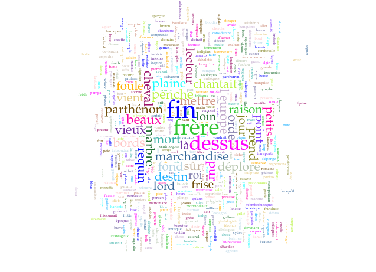

La Machine
C'est comme une mini imprimerie
dont je dispose les caractères par le regard
en appuyant simplement sur une surface chaude,
un peu graisseuse,
qui résiste un peu
pour me faire comprendre que la casse est prise, et puis la machine fait le reste.
La Machine combine différentes perspectives du texte en concevant la création comme un processus d’articulation entre humain et non-humain : projections littéraires et réalités techniques concordent pour produire des poétiques exploratoires qui font du texte un rouage dans une mécanique d’écriture. Au centre du produit littéraire, l’objet du travail d’écriture se somme au travers du terme tissé de méthodes, de typologies et de représentation : le texte.
Texte. Rien de plus commun, rien de plus complexe. C’est à croire que l’enchevêtrement des fils – l’étymologie même du mot texte propose la métaphore du latin texere ou tisser – rend le concept de textes désormais inutilisable : « depuis trente ans ce mot a bien mérité de la critique et [on] devrait lui accorder sa retraite » (Vernet, Max. « Sic Transit Sic.» in ( Citation: Calle-Gruber & Queen’s University (Kingston, Ont.), 1998, p. 205 Calle-Gruber, M. & Queen's University (Kingston, Ont.) (1998). Butor et l’Amérique: colloque de Queen’s University. L'Harmattan. ) cité par ( Citation: Sinclair, 2000, pp. 15-16 Sinclair, S. (2000). Une application d’HyperPo, un logiciel d’analyse de texte informatisée à La Disparition de Georges Perec . Queen's University, Kingston, Ontario. )
Le point soulevé par Sinclair et formulé au tout début d’une réflexion consacrée à une extension technique du texte (à savoir l’hypertexte) décrit parfaitement le contraste animant une notion désormais inévitable des études littéraires et qui pourtant demeure absolument et substantiellement impalpable aux regard d’une tradition des études littéraires. Plutôt que de déployer stratégies et ruses du discours pour éviter la confrontation avec une entité cousue et patchée de contradictions, ce qui aura été fait pour d’autres notions, l’écriture souhaite ici l’adresser frontalement. Si le texte n’est aujourd’hui rien de plus commun, complexe ou certain, c’est que son enchevêtrement de fils théoriques l’a décousu de son propre corps, soit de son rapport au monde. Par la machine, la mécanique de l’écriture souhaite l’y ramener.
Les travaux de Shillingsburg ( Citation: Shillingsburg, 1996 Shillingsburg, P. (1996). Scholarly editing in the computer age: theory and practice (3rd ed). University of Michigan Press. ) autour du texte en tant qu’objet d’édition, rappelés par Hayles dans My Mother was a Computer ( Citation: Hayles, 2005 Hayles, N. (2005). My mother was a computer: digital subjects and literary texts. University of Chicago Press. ) , illustrent cette perspective du texte comme une entité non seulement isolée des caractéristiques physiques mais également des qualités éditoriales (liées à la mise en page autant qu’aux effets de lecture). Dans ce décrochage de la théorie, le texte est comme « an inert, nonreactive substance that can be poured from container without affecting its essential nature » ( Citation: Hayles, 2005, p. 94 Hayles, N. (2005). My mother was a computer: digital subjects and literary texts. University of Chicago Press. ) et notre déprise de l’écriture est actée à nouveau. Ce ne sont pas les nouveaux médias qui ont coupé le cordon, la culture numérique hérite de cette coupure par une tradition des sciences humaines et la poursuit sur bien des tableaux. Pour expliquer l’incarnation du texte, la réponse conceptuelle ne suffit bien entendu pas et toute la quête de l’écriture ici est autant de renverser un ordre impérieux du discours – le régime de l’abstraction – que de l’inclure comme une maille participant à un enchevêtrement. Ni retraite ni révolution ni repos, la perspective de la machine s’attache davantage à découdre un entrelacement de représentations, imaginaires et procédures.
découdre, détisser,
remettre à l'ouvrage au matin,
redéfaire le soir,
tout le manège se noue dans l'attente d'un présence
comme si l'inscription des fils d'une narration pouvaient la faire apparaître
Pour composer/confronter/correspondre avec une idée et une réalité de l’écriture, le défilement des mots s’interroge ici sur la façon dont se nouent les engrenages littéraires, en prenant en compte non plus les outils de la langue et du style, mais les réalités d’un dispositif qui agence, articule, produit et ruse.
La mécanique de l’écriture #
[réécrire]
Dans l’apocalypse de l’écriture énoncée par Kittler sont visées plusieurs réalités de l’écrit : si l’écriture ne se fait plus humaine, c’est autant vis-à-vis d’une pratique d’inscription qu’au regard d’un type de signe produit. Le signe devient signal ou différentiel électrique tandis que l’écriture devient mécanique, si elle ne l’a pas en réalité toujours été, avec une partie intouchable et aveugle de la boîte noire ( Citation: Kittler, Vargoz & al., 2015 Kittler, F., Vargoz, F., Guez, E. & Parikka, J. (2015). Mode protégé. les Presses du réel Labex Arts-H2H. ) .
[preciser]
Les incarnations de l’écriture prennent aujourd’hui corps dans un espace où la distinction entre numérique et non-numérique, entre humain et non-humain est proche de l’artificiel, soit d’une construction rhétorique qui peut autant promettre la dictature des robots qu’elle peut nier leurs impacts sur nos pratiques de pensée, et peut-être également artificiellement débattue puisque la littérature contemporaine se définit principalement par des principes d’hybridations ( Citation: Ruffel, 2010 Ruffel, D. (2010). Une littérature contextuelle. Litterature, 160(4). 61–73. Retrieved from https://www.cairn.info/revue-litterature-2010-4-page-61.htm ) (entre types, publics, médias).
Parallèlement, le récit d’une immatérialité se poursuit entre l’abstraction du texte et la dématérialisation de l’écriture dans les environnements numériques. Dans la diversité des machines d’écriture, servant au geste d’inscription (comme les premières machines à écrire) ou produisant cette écriture par strates programmables (comme les générateurs littéraires), la question de l’engendrement du texte se pose : Comment un texte advient-il ? Et de quelle matrice est-il l’enfantement ? Herméneutique ou enquête pour révéler les fantômes et machinations, la démarche d’écriture vise ici à comprendre cette problématique maternité qui ne se défait pas de la machine tout en participant d’un récit pour en exprimer les imaginaires et discours en réseaux : à la différence d’une analyse auctoriale (portant sur les intentions de l’auteur en amont du texte), il s’agit d’« expliciter le mouvement par lequel un texte déploie un monde en quelque sorte en aval de lui-même » (en référence à la refiguration dans ( Citation: Ricœur, 1983, p. 122 Ricœur, P. (1983). Temps et récit. 1. Éd. du Seuil. ) ).
La matrice du texte #
Propre association de l’écriture ici-même, la porosité entre machine et matrice agit comme un spectre qu’il vaut d’autant mieux interpeller avec transparence. En tant que dispositif technique d’engendrement, la machine pose la question des multiples status du texte et ainsi d’une stratification de son être au monde. Un extrait, issu des nombreuses créations qui se nouent autour du mystère de l’origine, tiré de la pièce de théâtre Incendie de Mouawad permet d’illustrer la question en plus de produire un fil liant machine, matrice et texte.
« Un plus un ça peut t-il faire un ? » ( Citation: Mouawad, 2015, p. 120 Mouawad, W. (2015). Incendies. Leméac. )
Enquête généalogique, le récit Incendies suit les romans individuels successifs de deux jumeaux (une sœur et un frère) qui partent à la recherche de leur père et de leur frère disparus pour honorer la demande posthume de leur mère. L’odyssée des enfants se clôt sur cette révélation œdipienne : leur père et leur frère sont un seul et même homme. Le texte retrace une quête qui est en réalité celle de l’impossible origine parce qu’humainement inconcevable même si mathématiquement juste. Le paradoxe d’une réalité se joue entre des principes de relation humaine et des structures mathématiques. Le moment épiphanique du dénouement est retranscrit par le détournement d’un exercice mathématique qui rend calculable une situation qui n’est pas computable, au sens qui ne peut se résoudre, pour un récit humain (formé par l’idée d’inceste comme ubris interdit et tabou). En somme la solution fonctionne aux yeux de la logique mais n’est pas entendable aux oreilles de la raison. L’énigme de l’origine est exposée par la reprise de la conjecture, au demeurant indémontrée, de Syracuse (ou problème 3x +1) selon laquelle la suite de Syracuse1 de n’importe quel entier strictement positif atteint le chiffre 12. Au gré de cet impératif mathématique, les status familiaux que sont celui du père et du frère peuvent donc référer au même individu, c’est-à-dire dans l’analogie littéraire, à une même suite qui se répète infiniment. La question existencielle que pose la création de Mouawad s’érige par la quête, structure filée dans plusieurs de ses écrits où il s’agit de retrouver ce qui a été perdu, en somme l’être au sens de construction généalogique et tissage de sang où les liens s’avèrent en réalité entrelacés (Sœurs, Mère, les composants de la tétralogie Le Sang des Promesses entre autres). Si le principe de l’introspection implique dans ses narrations des êtres de mots pour porter un discours sur une humanité, le renversement de cette architecture humaniste a de fait déjà été effectué : les théories sur la génétique du texte n’ont en réalité pas d’autre quête que celle de comprendre les liens entre les perceptions du monde. Soit d’essayer de concevoir un système logique pour un évènement qui semble échapper à la raison. Le texte est-il un ou multiple ? Demeure t-il unique malgré ses reproductions ou est-il la somme de ses exemplaires ou entités ( Citation: Genette, 2010 Genette, G. (2010). L’oeuvre de l’art. Éd. du Seuil. ) ? Le texte est-il l’incarnation d’une idée dans une matière (soit 1 dans 1 pour faire 2), ou est-ce le même corps (ne pouvant donner d’autres somme que 1) ? Le texte est-il enfin le produit d’une machine et de moi en arrière de la machine dans un principe de co-auctorialité ?
Esprit de systèmes, Genette, reprenant la distinction de Goodman entre les arts autographiques et allographiques ( Citation: 1976 Goodman, N. (1976). Languages of Art: An Approach to a Theory of Symbols. Hackett Publishing. ) , définit la littérature comme un art allographique dans la mesure où son objet principal (ce qu’il désigne comme le texte) est de nature idéale et ne peut se concevoir que par réduction de ses manifestations matérielles. Si l’essence du littéraire (sous la forme de l’oeuvre) relève selon Genette d’une immanence idéale – elle peut être reproduite en un nombre illimité d’exemplaires tous valables ( Citation: Wolterstorff, 1980 Wolterstorff, N. (1980). Works and Worlds of Art. Oxford University Press. ) –, le critique distingue plusieurs modes d’existence de type transcendant ( Citation: Genette, 1994, pp. 300-325 Genette, G. (1994). L’œuvre de l’art. Editions du Seuil. ) :
- la transcendance par pluralité d’immanence : une oeuvre existe en plusieurs objets non identiques et interchangeables (textes), mais avec une unité opérale.
- pluralité opérale : l’objet d’immanence (texte) recouvre des significations différentes selon le contexte, il peut ainsi supporter plusieurs oeuvres.
- transcendance par partialité : une œuvre se présente de manière lacunaire ou fragmentaire.
Dans ce système ontologique texto-centrée et qui, héritée d’une idéalité esthétique de l’oeuvre littéraire ( Citation: Ingarden, 1983 Ingarden, R. (1983). L’œuvre d’art littéraire. L'âge d'homme. Retrieved from https://www.lagedhomme.com/ouvrages/roman+ingarden/l%27%C5%93uvre+d%27art+litteraire/210 ) , laisse l’oeuvre littéraire dans un flou d’existence, plusieurs créations et phénomènes du fait littéraire accrochent, ne trouvent pas raison et ne coïncident par avec la logique genettienne. Qu’en est-il des littératures qui existent par la vidéo ou d’autres médias ? qu’en est-il des variantes ? La notion d’oeuvre, qui aurait pu aider à la généalogie du texte, se trouve obsolète ( Citation: Bon, 2003 Bon, F. (2003). Pas besoin de la notion d’oeuvre, entretien pour la revue Animal. Retrieved from En ligne ) . Ce que l’on peut tout de même retenir des systèmes genettiens, qui paradoxalement contreviennent par leurs présences mêmes à une idéalité absolue du littéraire, c’est qu’il est une épaisseur du fait littéraire qui pourrait se saisir par des principes de diversité, ramification et relation. Cette épaisseur, il n’est pas étonnant que Genette la traduise par un mot et surtout une image qui va alors coller à la peau de sa théorie, bien qu’elle n’ait été qu’une belle image : le palimpseste.
Le palimpseste entendue comme une sur-écriture est une parfaite illustration des multiples status du texte par une principe de stratification des inscriptions. Historiquement assimilé à un parchemin manuscrit, le palimpseste est un texte-support réinscrit par des copistes (principalement entre le VII^e^ et le XII^e^ siècle) pour des raisons de coût. L’effacement ou désencrage de la première inscription se faisait au Moyen-âge à l’aide d’un stylet ou d’une pierre ponce3 Au dessus de cette première inscription historique, grattant quelque peu le contexte d’émergence, notre étude cherche à réinscrire le palimpseste comme méthodologie d’écriture transmédiale et transhistorique, soit dans le cadre d’une théorie générale de la littérature sur les matériaux de son écriture. Écriture faite écriture, le palimpseste rejoint en l’état la catégorie des dispositifs selon la définition générale de Foucault ( Citation: Agamben & Rueff, 2006 Agamben, G. & Rueff, M. (2006). Théorie des dispositifs. Posie, N° 115(1). 25–33. Retrieved from https://www.cairn.info/revue-poesie-2006-1-page-25.htm ) : une conjoncture de réels établie par un rapport de force motivée par des enjeux de pouvoir et de savoir. Dans le processus palimpsestique, plusieurs corps sont impliqués – le support, la matière de la première inscription, le stylet, la matière de la deuxième inscription – et travaillés dans un jeu de limites – le stylet est retourné/détourné, le support est gratté sans être perforé, la première inscription est effacée en demeurant discernable – et ce, en vue d’imposer un nouveau récit qui ne peut cependant pas se départir de son contexte ou environnement d’écriture. C’est en tant que « réseaux qui existe entre [l]es éléments » [entretien de Foucault daté de 1977 in ( Citation: Agamben & Rueff, 2006, p. 27 Agamben, G. & Rueff, M. (2006). Théorie des dispositifs. Posie, N° 115(1). 25–33. Retrieved from https://www.cairn.info/revue-poesie-2006-1-page-25.htm ) que le palimpseste lie les composants support et écriture aux questionemments de l’origine. Liés par une même origine et logique empirique, les sur-inscriptions érigent le support d’écriture au rang de matrice : comparable à la partogénèse, le premier texte enfante le second en tant qu’il détermine sa venue comme il a été déterminé par la matière de son support. Si l’on appose sur les récits et imaginaires invoqués dans la matrice de l’écriture le discours de la pensée des médias, l’écriture comme média }} est une composition de relations (héritage, leg) qui s’érige sur d’autres écritures. À l’image de la boucle infinie de Syracuse, le média est toujours média d’autres médias (dont il reprend des caractéristiques et principes de fonctionnement) et l’écriture (dans un système d’inter-relations proche de l’entrelacement textuel de Genette) est toujours une écriture issue d’autres écritures, soit autant des caractéristiques langagières (de l’ordre du discours) que des caractéristiques physiques. Si on ne peut assimiler le palimpseste à l’origine comme un dispositif d’écriture ou de sur-écriture, il instaure une procédure qui se fonde sur une connaissance physique et technique de ce que désigne écrire, il prend surtout en compte une épaisseur plastique de l’écriture et donc une multiplicité du texte (pouvant être sous, surtexte ou hypo, hypertexte tout en demeurant paratexte) qui est autant médiatique. Sous-écriture ici même, le palimpseste représentait aussi l’une des premières grandes arcanes du projet d’écriture doctorale : avant d’être consacrée officiellement à l’épaisseur de l’écriture, la thèse ambitionnait la resémantisation du palimpseste avec la prise en compte des caractéristiques de l’écriture numérique. La mise à l’épreuve, l’appronfondissement, le grattage de la surface de ce qui semblait être un horizon d’étude en a révélé la nature : le palimpseste était une belle image qui, si elle tient sous certains angles la comparaison, ne peut être que métaphorique quand il s’agit d’écriture.
Dans l’imaginaire d’une matrice littéraire, c’est également une saveur organique qui reste en bouche de la réflexion. La plasticité relevée d’un rapport d’inscription ne se limitant pas à un espace-temps ou à une rédaction rappelle une porosité quasi épidermique, le fonctionnement complexe d’élément corporel interne qui ne sont pas si étrangers à la notion même de machine. L’image de la mécanique organique est une perspective qui permet de d’invoquer une réalité corporelle de l’écriture entre dispositif et articulation.
La fracture de l’organique #
Depuis ses nombreuses métamorphoses, la mécanique de la machine est étroitement liée à l’organique, comme extension appareillée d’un corps ou d’un membre spécifique. Désignant à l’origine un instrument particulier (utilisé pour soulever des poids, comme un levier actionné par une main humaine), la machine développe son accointance charnelle avec les définitions suivantes, se généralisant à plusieurs types d’intervention sur la matière.
Ex his sunt alia quae μηχανικῶς, alia quae ὀργανικῶς moventur. Inter machinas et organa id videtur esse discrimen, quod machinae pluribus operibus aut vi majore coguntur effectus habere, uti balistae torculariorumque preda. Organa autem unius opera prudenti tactu perficiunt qiod propositum est, uti scorpionis seu anisocyclorum versationes. Ergo et organa et machinarum ratio ad usum sunt necessaria, sine quibus nulla res potest esse non impedita. ( Citation: Vitruve, 1986, p. 1.3 Vitruve, M. (1986). De l’Architecture. Livre X - Vitruve. Retrieved from https://www.lesbelleslettres.com/livre/9782251013091/de-l-architecture-livre-x )
De toutes ces machines, les unes se meuvent μηχανικῶ, les autres ὀργανικῶς. Entre les machines et les organes, il me semble y avoir cette différence que les machines exigent pour être effective, davantage de bras, de forces, comme les balistes et les arbres des pressoirs, et que les organes, maniés avec adresse par un seul individu, exécutent ce à quoi ils sont destinés, comme les arbalètes et les anisocycles. Toutes ces machines, de quelque espèce qu’elles soient, sont d’un usage indispensable puisque sans elles il n’est rien qui se fasse sans difficulté. (traduction personnelle)
Si les deux catégories énumérée par Vitruve se rejoignent dans un principe de maniement, se distinguant entre adresse et force, elles dérivent chacune pour creuser encore une différence (le sens des organa vitruviens correspondant aujourd’hui davantage au sens moderne d’outils) : il y a des machines simples (organa) et des machines composées. Décrivant alors la structure complexe d’un corps physique en tant que machine corporelle, « ensemble d’éléments ayant la complexité d’une machine » ( Citation: Oresme, 1968, pp. 520-55 Oresme, N. (1968). Le Livre du ciel et du monde. The University of Wisconsin Press. Retrieved from https://www.mullenbooks.com/pages/books/147210/nicole-oresme-albert-d-menut-alexander-j-denomy/le-livre-du-ciel-et-du-monde ) ou « combinaison d’organes (du corps d’un être animé) » ( Citation: Descartes, Alquié & al., 2010, p. 628 Descartes, R., Alquié, F. & Moreau, D. (2010). Oeuvres philosophiques (Éd. corrigée). Éd. Classiques Garnier. ) , la machine est autant un outil méthologique pour comprendre une architecture de l’extérieur qu’un principe pour saisir et agir sur une mécanique interne. L’esquisse initiale de la machine sur laquelle l’on peut s’accorder dans un premier temps est celle de produire une modélisation d’un corps et notamment de son pouvoir d’action sur le monde.
Les développements qui suivront redéfiniront les contours de la machine en la distinguant plus radicalement de l’outil et par extension du maniement : désormais la machine « s’appuie sur une source de pouvoir en dehors du corps et […] n’est pas opérée manuellement » ( ( Citation: Ingold, 2010, p. 298 Ingold, T. (2010). L’Outil, l’esprit et la machine : Une excursion dans la philosophie de la « technologie ». Techniques & Culture. Revue semestrielle d’anthropologie des techniques(54-55). 291–311. https://doi.org/10.4000/tc.5004 ) à partir de ( Citation: Mitcham, 1978, pp. 235-36 Mitcham, C. (1978). Types of Technology. Research in Philosophy & Technology, 1. 229–294. ) . La machine dans son évolution générale s’extrait donc en quelques sortes de son corps d’origine : passant d’une architecture interne et organique, à une extension physique jusqu’à puiser un pouvoir d’intervention hors de l’humain. La machine s’est séparée de la matrice dans son histoire. Cette indépendance, qui est certainement la source de nombreux discours et imaginaires apocalyptique et technophobe, est ce que retiennent notamment les définitions actuelles :
Thus the notion of the tool has come to be reserved for that aspect of a device that is activated by human agency, whereas ‘machine’, in Mitcham’s words, commonly ‘denotes an instrument in its human independence, or at least that aspect of the device which is not dependent on man’ ( Citation: Mitcham, 1978, p. 236 Mitcham, C. (1978). Types of Technology. Research in Philosophy & Technology, 1. 229–294. ) in ( Citation: Ingold, 1989 Ingold, T. (1989). Tools, minds and machines : an excursion in the philosophy of technology. Techniques & Culture. Revue semestrielle d’anthropologie des techniques(12). https://doi.org/10.4000/tc.805 ) .
Ainsi, la notion de l’outil a fini par être réservée à cet aspect d’un dispositif qui est mis en œuvre par l’action humaine, tandis que la « machine », selon les mots de Mitcham « désigne habituellement un instrument dans son indépendance vis-à-vis de l’homme, ou au moins l’aspect du dispositif qui ne dépend pas de l’homme » ( Citation: Mitcham, 1978, p. 236 Mitcham, C. (1978). Types of Technology. Research in Philosophy & Technology, 1. 229–294. ) . (traduction d’Arundhati Virmani in ( Citation: Ingold, 2010, p. 298 Ingold, T. (2010). L’Outil, l’esprit et la machine : Une excursion dans la philosophie de la « technologie ». Techniques & Culture. Revue semestrielle d’anthropologie des techniques(54-55). 291–311. https://doi.org/10.4000/tc.5004 ) )
Si certains dispositifs dans leurs hybridités résistent aux catégories qui demeurent somme toute théoriques, on pourra s’accorder, pour les dispositifs qui nous intéressent ici, que la machine est un modèle dans lequel l’humain n’est plus au centre du maniement sans être totalement mis à l’écart. Le « degré d’indépendance »4 qui distingue l’outil de la machine place la machine au coeur de la question du déterminisme technique de l’écriture. Identifiée comme « le problème du déterminisme technologique » ( Citation: Heilbroner, 1967 Heilbroner, R. (1967). Do Machines Make History?. Technology and Culture, 8(3). 335. https://doi.org/10.2307/3101719 ) , la machine et la technologie partagent les mêmes schémas d’évolution, soit un mouvement progressif de rupture organique. Parce que les machines qui seront saisies dans la suite de l’écriture sont essentiellement et logiquement appréhendées comme machine d’écriture (composées par et destinées à l’écriture), cette rupture est également celle d’une écriture se trouvant alors modifiée à l’interne, abstraite d’une réalité de production.
Produite également à partir d’une époque moderne, la technique a aujourd’hui peu d’analogies avec son passé classique aristotélicien (tekhnê signifiait « la capacité générale à fabriquer des choses avec intelligence » ( Citation: Bruzina, 1982, p. 167 Bruzina, R. (1982). Art and Architecture, Ancient and Modern. Research in Philosophy & Technology, 5. 163–187. ) ). Influencée par un rapport mécaniste de la nature, la technique passe de l’« aptitude qui dépend de la capacité de l’artisan à envisager des formes particulières et à appliquer ses compétences manuelles et son acuité visuelle pour les exécuter » ( Citation: Ingold, 2010, p. 292 Ingold, T. (2010). L’Outil, l’esprit et la machine : Une excursion dans la philosophie de la « technologie ». Techniques & Culture. Revue semestrielle d’anthropologie des techniques(54-55). 291–311. https://doi.org/10.4000/tc.5004 ) à une perpective du « purement technique ».
Là où l’artisan adaptait son matériel brut à une certaine conception de forme, tout en restant en grande partie ignorant des processus de travail, son homologue contemporain – que nous pouvons pour le moment désigner par « technicien » – applique des règles claires de procédure dont la validité est insensible aux formes particulières qu’il désire créer. Ces règles, enracinées dans les principes généraux des sciences naturelles, fournissent le logos de la tekhnê, la rationalisation du processus de production qui manquait dans l’art de l’artisan ( Citation: Mitcham, 1979, p. 182 Mitcham, C. (1979). Philosophy and the history of technology. The History and Philosophy of Technology. 163–201. ) . ( Citation: Ingold, 2010, p. 292 Ingold, T. (2010). L’Outil, l’esprit et la machine : Une excursion dans la philosophie de la « technologie ». Techniques & Culture. Revue semestrielle d’anthropologie des techniques(54-55). 291–311. https://doi.org/10.4000/tc.5004 )
Rejoignant la mécanique (bien que les deux principes étaient distingués selon une conception classique), la technique moderne est « une instrumentalité d’un certain genre, notamment, celle qui peut être séparée du contexte spécifique de l’expérience et de la sensibilité humaine en tant qu’impliquée dans la fabrication » ( Citation: Bruzina, 1982, p. 167 Bruzina, R. (1982). Art and Architecture, Ancient and Modern. Research in Philosophy & Technology, 5. 163–187. ) . Cette séparation de l’humain dans son rapport au monde rejoint le regard de Kittler sur la transition médiatique ayant cours entre 1800 et 1900 : les dispositifs d’enregistrement saisissent désormais des données qui font défaut à la perception humaine, qui échappe à ses sens ( Citation: Kittler, 1993 Kittler, F. (1993). Draculas Vermächtnis: technische Schriften (1. Aufl). Reclam. ) .
Du rythme, du rythme, plus vite, plus vite.
L’être humain insuffle son énergie dans la machine. La machine n’est rien d’autre que lui-même, son extrême puissance son extrême concentration et sa tension finale. Et lui-même se fait machine, se fait levier, se fait touche, se fait caractère et chariot mobile.
Ne pas penser, ne pas réfléchir, encore, encore, vite, vite, taper, taper, tiptiptiptiptiptip … (traduction ( Citation: Brück, 1950 Brück, A. (1950). Mademoiselle Brückner, dactylo: (‘Schicksale hinter Schreibmaschinen’), roman traduit de l’allemand par Raymond Henry. Busson. ) à partir de ( Citation: Brück, 1930, p. 229 Brück, C. (1930). Schicksale hinter Schreibmaschinen. Sieben-Stäbe-Verlag. ) )
Nouveau démembrement d’une organique de la mécanique, l’avènement d’une instrumentalité d’un certain genre cause également un autre divorce : la mécanique moderne de la machine distingue le moment du design, du dessin, du projet ou de la modélisation de l’étape de production, d’implémentation, d’écriture. Cette déliaison creuse en partie l’écart entre technicien et ingénieur ( Citation: Mitcham, 1978, p. 230 Mitcham, C. (1978). Types of Technology. Research in Philosophy & Technology, 1. 229–294. ) La machine, placée du côté de la construction, restreint encore dans les nouveaux contours de sa mécanique le lien et l’implication du sujet humain dans l’acte de fabrication ( Citation: Ingold, 2010 Ingold, T. (2010). L’Outil, l’esprit et la machine : Une excursion dans la philosophie de la « technologie ». Techniques & Culture. Revue semestrielle d’anthropologie des techniques(54-55). 291–311. https://doi.org/10.4000/tc.5004 ) . La progressive disparition de la main humaine dans la production émane de cette perspective du faire et vient en quelques sortes rompre le mythe de l’homo faber, l’homme par le savoir-faire, au coeur de son idéalité. L’angoisse techno-déterministe peut par cette perspective du faire être renversée : ce ne sont pas les machines qui manque d’humanité mais bien les humains5. Soit, pour reformuler, la machine, qui désignait une physiologie organique puis un potentiel d’intervention manuel, après de multiples fractures, devient désormais un lieu (si ce n’est Le lieu) pour observer comment est manoeuvrée une humanité du faire-écriture.
[introduction] Ouvrir la machine par l’écriture, analyser ses mécaniques de production, observer cette séparation de l’agir entre le corps humain en action et de l’autre un travail ( Citation: Bruzina, 1982, p. 170 Bruzina, R. (1982). Art and Architecture, Ancient and Modern. Research in Philosophy & Technology, 5. 163–187. ) , permet non seulement de recouvrer un principe organique mais également de restaurer le lien entre le moment de la modélisation et celui de l’implémentation d’un texte.
Perdre la ligne, apprendre la frappe #
[ajout] critique Anders
Wer das Aufschreiben besorgt, vermag ich nicht mit Sicherheit zu sagen. (Exclamation du président Schreber retranscrite par Freud)
Je ne saurais dire avec certitude qui assure la transcription. (traduction personnelle)
La déprise et les discours qui l’ont pressentie n’est pas sans évoquer une paranoïa proche du cas du président Schreber qui loin de se référer spécifiquement à la machine d’écriture, souligne un trouble dans l’intentionalité d’écriture. Si la machine moderne évacue la main humaine dans la production, ce n’est pas seulement une déprise dans la pensée technique qui se trame, pour Heidegger, c’est bien plus dans l’essence de l’humain que se fait la rupture.
L’homme lui-même « agit » et « manoeuvre » grâce à la main ; car la main forme avec la parole le trait essentiel de l’homme. […] Grâce à la main ont lieu non seulement la prière et le meurtre, le salut et le remerciement, le serment et le signe, mais aussi l’« oeuvre » de la main, le « métier », et l’instrument. La poignée de main scelle un pacte. La main déclenche une « oeuvre » de destruction. La main ne se déploie en tant que main que là où il y a décèlement et cèlement. Aucun animal n’a de main, et d’une patte, d’une serre ou d’une griffe jamais ne naît une main. […] Ce n’est qu’à partir de la parole et avec la parole que surgit la main. Ce n’est pas l’homme qui « a » des mains, mais la main qui porte l’essence de l’homme, car la parole comme domaine d’essence de la main est le fondement de l’essence de l’homme. (Heidegger, Parménide, p. 132 cité par ( Citation: Kittler, Vargoz & al., 2018, p. 333 Kittler, F., Vargoz, F., Alloa, E. & Guez, E. (2018). Gramophone, film, typewriter. les Presses du réel. ) )
Nouveau roman de l’humanité, proche du mythe de l’homo faber de Flusser {{Fabrique}} mais plus établi dans une individualité, la main d’Heidegger a fonction de ligne entre les époques et les actions humaines, entre ses marqueurs de société, dans ses rapports de communauté. Dans cette perspective où la main est le premier moyen d’intervention, celui du primitive man (Flusser), et les doigts qui la composent semblent détenir toute la « dignité » de l’humain, il manque cruellement le principe de saisissement et d’outil car c’est en réalité tout le sens du manuel que redéfinit une industrialisation et qui fait se tisser des liens entre les machines et les cultures :
L’industrialisation atteignit à la fois l’écriture manuscrite et le travail manuel. […] Ce n’est pas une coïncidence si les premiers modèles concurrents [à la machine à écrire fabricable en série Sholes par Remington & Son en 1874] provinrent de la Compagnie de machines à coudre domestiques, de la fabrique Meteor, usine saxonne de fabrication de machines à coudre ou encore de Seidel & Naumann [qui était jusqu’en 1944 la plus grosse entreprise de machines à coudre et à écrire] (Rolf Stümpel Vom Sekretär zur Sekretärin. Eine Ausstellung zur Geschichte der Schreibmaschine und ihrer Bedeutung für den Beruf der Frau im Büro, 1985, p. 9). ( Citation: Kittler, Vargoz & al., 2018, p. 311 Kittler, F., Vargoz, F., Alloa, E. & Guez, E. (2018). Gramophone, film, typewriter. les Presses du réel. )
La main d’Heidegger est sur ce point à comprendre comme le symbole d’un principe d’action, un premier outil rattaché au corps de l’humain qui lui permet de créer toutes les autres extensions qui dépassent mais peuvent également contredire un statut d’être au monde. Si la perspective d’Heidegger reprise par Kittler est certes logocentrée et anthropocentrée, elle a le mérite de penser l’introduction de la machine dans le processus de l’écriture par le spectre des rapports entre humain et non-humain, en les opposant comme un combat ontologique.
La machine à écrire arrache l’écriture au domaine d’essence de la main, c’est-à-dire de la parole. Le mot lui-même devient quelque chose de « tapé ». Là où l’écriture à la machine, en revanche, n’est qu’une transcription et sert à la conservation de l’écrit, ou substitue à ce qui a été écrit un texte « imprimé », elle a sa signification propre, mais limitée. (Heidegger, Parménide, p. 133 cité par ( Citation: Kittler, Vargoz & al., 2018, p. 333 Kittler, F., Vargoz, F., Alloa, E. & Guez, E. (2018). Gramophone, film, typewriter. les Presses du réel. ) )
« [C]roissante dévastation du mot » (au sens ontologique du récit, μῦθος et de la parole, λόγος), la machine à écrire est reprise dans sa qualité d’intervention radicale sur le monde en déplaçant l’essence de l’humain et donc sa position vis-à-vis de ce dernier et de lui-même. Intermédiaire « à mi-chemin de l’outil et de la machine » (Heidegger Parménide 1942-43, 2011, p. 141), la machine à écrire dans l’histoire du faire de l’humain est un élément de transition qui, de manière identique dans sa lecture de l’histoire culturelle, constitue une entité de la trinité technologique Gramophone, Film, Typewriter de Kittler. Dans la lignée des pensées des médias, les théories sont influencées par un contexte historique et un imaginaire de l’armement. La machine à écrire arme concrètement le discours de l’humain en ce que la nouvelle gestuelle scriptuaire évoque pour les deux chercheurs un mouvement plutôt offensif (chez Heidegger) ou ouvertement combatif (chez Kittler) :
La machine à écrire devient une mitrailleuse à discours. La machine, qui se base sur ce que l’on appelle non sans raison des « frappes », fonctionnait par étapes automatisées et discrètes, comme le mécanisme de chargement en munitions du revolver ou de la mitrailleuse […]. ( Citation: Kittler, Vargoz & al., 2018, p. 317 Kittler, F., Vargoz, F., Alloa, E. & Guez, E. (2018). Gramophone, film, typewriter. les Presses du réel. )
La métaphore militaire apposée à la machine évoque certainement pour Kittler l’héritage des travaux de Turing mais également une culture littéraire notament la création entre écriture et réalisation de Cocteau. Figure à la fin du passage entre deux paradigmes culturels, Cocteau a conçu des créations à l’image des développements techniques de la fin du XIX^e^ siècle : le téléphone est l’acteur principal de La Voix humaine ; Orphée dont il a signé le scénario retrace toute l’émergence d’une époque où les miroirs, les doubles, les cryptages et la multiplication des ondes troublent l’esprit des humains ( Citation: Cocteau, 2003, p. 203 Cocteau, J. (2003). Du cinématographe (Nouvelle [3.] éd. revue et augmentée). Ed. du Rocher. ) . La machine à écrire figure dans le bestiaire technologique de Cocteau puisqu’elle incarne le noeud narratif de la pièce du même titre. Inpiré de l’affaire réelle dite de Tulle6, la pièce décrit l’état d’une ville placée sous la terreur de lettres anonymes dactylographiées et signées « la machine à écrire » et la poursuite par le personnage principal de cette entité qu’il « imagine […] qui table, qui tire qui manie sa mitrailleuse » (p. 67). ( Citation: Kittler, Vargoz & al., 2018, p. 319 Kittler, F., Vargoz, F., Alloa, E. & Guez, E. (2018). Gramophone, film, typewriter. les Presses du réel. )
La « tape » et la « frappe » sont désormais le nouveau lexique de l’écriture qui par la machine se divise en deux régimes :
Au début du règne de la machine à écrire, une lettre écrite à la machine passait encore pour une lettre de bienséance. Aujourd’hui une lettre écrite à la main est une chose vieillie et non désirable, qui gêne la lecture hâtive. L’écriture machinale prive la main de son rang dans le domaine de la parole écrite et dégrade la parole en moyen de communication. Elle présente en outre l’avantage de celer l’écriture manuscrite, et par là même le caractère. Grâce à l’écriture à la machine tous les hommes se ressemblent. (Heidegger, Parménide, p. 140 cité par ( Citation: Kittler, Vargoz & al., 2018, p. 333 Kittler, F., Vargoz, F., Alloa, E. & Guez, E. (2018). Gramophone, film, typewriter. les Presses du réel. ) )
La déprise de l’écriture, la désécriture de Kittler réfère également à la défection de la main dans le geste d’écriture, et il n’est pas étonnant qu’il se réfère dans son étude de la machine à écrire à la pensée d’Heidegger qui, ironiquement, traduit ou parle en passant par le régime de l’écriture manuscrite. Mais si la main demeure concrètement dans la transaction, c’est davantage son ordre et la lisibilité de l’action qui sont revus dans un balancement entre décèlement et scèlement.
La machine à écrire est un nuage que rien n’annonce, c’est-à-dire un cèlement qui, malgré sa présence insistante, se retire et à travers lequel le rapport de l’être à l’homme subit une mutation. Rien en effet ne la laisse voir, elle ne se montre pas en son essence ; (Heidegger, Parménide, p. 141 cité par ( Citation: Kittler, Vargoz & al., 2018, p. 333 Kittler, F., Vargoz, F., Alloa, E. & Guez, E. (2018). Gramophone, film, typewriter. les Presses du réel. ) )
Le flou de la ligne directrice du faire-écriture le pose McLuhan comme une fusion entre « la composition et la publication » (p. 299 traduction) et donc impose une attitude entièrement nouvelle si on la considère dans le paradigme de l’auteur : pour l’éditeur, composition et publication étaient déjà fusionnées dans l’établissement de la page d’imprimerie. Au-delà du principe de fabrication d’une écriture, où la machine à écrire renvoit à une industrialisation personnelle de l’écriture, les premières machines à écrire comme le remarque Gitelman laissaient une latence dans le dévoilement du texte tappé : les lignes du texte sont alors montrées les unes après les autres au fur à mesure de la frappe.
The machine’s upstrike design seemed to refute the possibility of error, however unrealistically, and in removing the act of inscription from the human eye seemed to underscore its character as a newly technological and automatic event. ( Citation: Gitelman, 1999, p. 206 Gitelman, L. (1999). Scripts, Grooves, and Writing Machines: Representing Technology in the Edison Era. Stanford University Press. )
La fusion s’aligne avec un aveuglement du signe de l’instant qui distingue encore un régime d’écriture vis-à-vis d’un autre :
Lors de l’écriture manuscrite, l’oeil doit constamment observer la ligne écrite, et uniquement celle-ci. Il doit surveiller la réalisation de chacun des signes écrits, mesurer, diriger, en bref il doit conduire et guider la main lors du tracé de chaque trait. À l’inverse, la machine à écrire produit par une simple pression brève du doigt une lettre complète à l’endroit prévu sur le papier, qui n’est non seulement pas effleuré par la main de l’écrivain mais qui, éloigné de celle-ci, se situe en outre en un tout autre lieu que là où les mains travaillent. ( Citation: Herbertz, 1909, p. 559 Herbertz, R. (1909). Zur Psychologie des Maschinenschreibens. J. A. Barth. )
Selon les observations d’Angelo Beyerlen, sténographe royal du Wurtemberg et premier marchand de machines à écrire en Europe, l’endroit où apparaissent les signes est un endroit invisible, prévu pour l’action de la machine, faisant de l’écriture dactylographiée un processus aveugle. L’aveuglement est ce qui déplace la souveraineté de la main et plus largement du sujet : l’acte d’écriture n’est plus un acte de lecture au sens où elle advient sans la grâce de l’individu, sans le regard humain, annonçant ainsi la littérature automatique. L’écriture machinique est alors une remise en cause du phallogocentrisme de la plume classique ( Citation: Kittler, Vargoz & al., 2018, p. 342 Kittler, F., Vargoz, F., Alloa, E. & Guez, E. (2018). Gramophone, film, typewriter. les Presses du réel. ) comme une remise en cause d’un anthropocentrisme de l’écriture.
Dans la boule de Nietzsche #
Pour décrire le moment du passage de l’écriture en tant que poétique à la mécanique d’un processus, qui déjà annonce l’automatisme électrique des prochaines machines, Kittler se saisit de l’exemple Nietschze en impliquant autant de faits biographiques de la vie du philosophe, de l’écrivain et de l’homme d’un siècle dont le paradigme se trouve dans un balancement culturel majeur.
Myope, sujet à anisocories et migraines à répétition, Nietzsche incarne la quête d’une écriture de son propre environnement d’inscription. C’est durant ce qu’il appelle l’année « de la cécité » (lettre du 14 août 1879, in op, II-5, p. 435) qu’il fait le projet d’adopter une machine à écrire : la machine n’est alors pas, à la différence d’auteur comme Twain ou Nansen, une modernisation d’inspiration transhumaniste ou le choix d’une expérimentation poétique pour pousser la productivité (Burghagen p. 22), mais une solution pour compenser des déficiences physiologiques réelles qui transparaissent d’ailleurs entre les lignes du Voyageur et son ombre (1880) et son style aphorique (lettre 5 novembre, II-5, p. 461).
Der Halb-Blinde. Der Halb-Blinde ist der Todfeind aller Autoren, welche sich gehen lassen. Diese sollten seinen Ingrimm kennen, mit dem er ein Buch zuschlägt, aus welchem er merkt, daß sein Verfasser fünfzig Seiten braucht, um fünf Gedanken mitzuteilen: jenen Ingrimm darüber, den Rest seiner Augen fast ohne Entgelt in Gefahr gebracht zu haben. – Ein Halb-Blinder sagte: alle Autoren haben sich gehen lassen. – » Auch der heilige Geist? « – Auch der heilige Geist. Aber der durfte es; er schrieb für die Ganz-Blinden.
Les demi-aveugles. — Le demi-aveugle est l’ennemi juré de tous les écrivains qui se laissent aller. Ces derniers devraient connaître la colère avec laquelle il referme un livre en constatant qu’il a fallu cinquante pages à son auteur pour partager cinq pensées : cette colère de voir ce qui lui reste d’yeux mis en danger presque sans rémunération. - Un demi-aveugle disait : tous les auteurs se sont laissés aller. - « Le Saint-esprit aussi ? » - Le Saint-Esprit aussi. Mais lui, il en avait le droit ; il écrivait pour les personnes totalement aveugles.
Envoyée depuis le Danemark, la machine du modèle de Malling-Hansen sera ce qui permet à l’auteur de retrouver une vue sur l’écriture et, c’est sans un certaine satisfaction philologique, que le parcours de l’écriture nietzschéenne permet à Kittler d’inscrire une date de naissance à la littérature de la machine à écrire (en 1882). C’est pour des raisons très concrètes que Nietzsche préfère la Boule de Malling-Hansen au modèle américain plus répandu : la machine destinée à devenir son outil d’écriture de remplacement devait être transportable dans ses voyages et sur ce point, le modèle américain s’avérait trop lourd (lettre du 5 décembre 1881, III-1, p. 146). La déprise visuelle de l’écriture que cause la machine à écrire est pour Nietzsche un atout, ses yeux n’ayant, après une semaine de prise en main de son nouvel outil d’écriture, plus besoin d’être actifs et ainsi « l’écriture automatique était inventée, l’ombre du voyageur était incarnée » ( Citation: Kittler, Vargoz & al., 2018, p. 335 Kittler, F., Vargoz, F., Alloa, E. & Guez, E. (2018). Gramophone, film, typewriter. les Presses du réel. ) . Devant la machine à écrire, comme le laisse aussi entendre Heidegge, que tous les hommes sont égaux en droit et en corps : en 1823, le médecin Müller publie son traité au titre inspiré et synthétique Neu erfundene Schreib-Maschine, mittelst welcher Jedermann ohne Licht in jeder Sprache und Schriftmanier sicher zu schreiben, Aufsätze und Rechnungen zu verfertigen vermag, auch Blinde besser als mit allen bisher bekannten Schreibtafeln nicht nur leichter schreiben, sondern auch das von ihnen Geschrieben selbst lesen könner ou La machine à écrire, nouvelle invention, au moyen de laquelle chacun peut écrire en toute sécurité, sans lumière, dans n’importe quelle langue et dans n’importe quel style d’écriture, rédiger des dissertations et des factures, et au moyen de laquelle les aveugles peuvent non seulement écrire plus facilement qu’avec toutes les tablettes d’écriture connues jusqu’à présent, mais aussi lire eux-mêmes ce qu’ils ont écrit.
Dans le parcours de Nietzsche, Kittler mêle la perspective culturelle d’une nouvelle économique technologique qui s’impose dans les pratiques et la question humaine dans l’étude des signes. Nietzsche se mécanise et écrire revient à forger des vers. Ce qui implique non seulement que l’auteur se dissout dans le fonctionement média-technique en devenant une composante non exclusive de la production et que l’écriture qui définit Nietzsche comme aveugle écrivant passe de l’aphorisme à la lacune, au style télégraphique. Ce changement remarqué par son ami Köselitz, Nietzsche l’explique ainsi :
Unser Schreibwerzeug schreibt mit an unseren Gedanken. (Nietschze, lettre à Heinrich Köselitz, fin février 1882 dans Nietzsche Briefwechsel : Kritische Gesamtausgabe, 1975-1984, vol III/1, p. 172)
La boule d’Hansen, par la disposition semi-circulaire des touches, empêchait de voir la feuille de papier (à la verticale, les mains tapent un texte qui émerge à l’horizontal) et cette disposition n’est pas seulement le symbolique aveuglement d’une humanité dans sa main-mise sur la parole, mais un nouveau paradigme de l’écriture par la machine qui implique non pas l’avènement d’un rapport humain/non-humain dans l’écriture, mais la révélation de ce rapport.
Pour optimiser l’écriture par la machine, celle-ci ne doit plus être rêvée comme l’expression d’un individu ou comme la trace d’un corps. Les formes, différences et fréquences de ses lettres mêmes doivent être réduites à des formules. Celui que l’on appelle être humain se désagrège en physiologie et technologie de l’information. ( Citation: Kittler, Vargoz & al., 2018, p. 58 Kittler, F., Vargoz, F., Alloa, E. & Guez, E. (2018). Gramophone, film, typewriter. les Presses du réel. )
Ce n’est pas tant ici que la machine perd de son organique, mais bien qu’elle en récupère à partir de son utilisateur tout en renversant le principe d’identité individuelle de l’inscription : désormais les écritures se ressemblent. Ce que Kittler considère être devenue des lettres de cécité lie alors le destin de l’écrivain et de son outil d’écriture : « Les lettres sur le papier ressemblèrent finalement à celles qui se formaient sur la rétine droite » ( Citation: Kittler, Vargoz & al., 2018, p. 343 Kittler, F., Vargoz, F., Alloa, E. & Guez, E. (2018). Gramophone, film, typewriter. les Presses du réel. ) .
Le fait littéraire dans la machines est une histoire de modèles.
Machine et modèles #
Much has been lost as well as gained in the change from handiwork to machine made things. Lynn Thorndike)
De la machine à écrire à l’ordinateur, en passant par les conceptions intermédiaires qui ont mêlé le fil à l’industrialisation de dispositifs pour produire du texte, la perspective de la machine fait également écho aux questionnements liés à l’écriture numérique et plus largement à la culture numérique ( Citation: Doueihi, 2011 Doueihi, M. (2011). Pour un humanisme numérique. Seuil. ) . Si toutes les technologies (photographie, cinéma, livre), parce qu’elles sont des architectures de l’information particulières à des configurations matérielles propres, affectent l’environnement culturel humain : jusqu’au cas du miméographe, qui semble pourtant anecdotique dans l’histoire des machines de publication mais qui a été à l’origine d’un phénomène culture à part entière. Objet représentatif d’une révolution industrielle qui amena le développement des lieux d’enseignement et une nouvelle impulsion dans l’économie des instances d’édition (développement de maisons d’édition non-parisiennes et spécialisation disciplinaire de maisons d’édition), le Duplicateur à pochoir d’Edison (1894), appelé aussi miméo ou miméographe, est l’implémentation du principe de presse portative : sa commercialisation au début des années 1900 est à l’origine de l’émergence de plusieurs éditions alternatives, marginales et parfois dissidentes en Amérique du Nord (les communautés « miméo » et le mouvement des fanzines) mais aussi en Europe et en URSS (où elles seront également interdites par le pouvoir en place). Outil d’« interaction cognitive et [de] pratique d’un agent cognitif humain » ( ( Citation: Meunier, 2014 Meunier, J. (2014). Humanités numériques ou computationnelles : enjeux herméneutiques. Sens public. https://doi.org/10.7202/1043651ar ) , idée que l’on retrouve dans McCarthy, « an agent of perception and instrument of thought »), l’ordinateur pour sa part implique un type de médiation particulier et certainement plus impactant que le Miméographe ou tout autres technologies en tant qu’il n’est plus la remédiation de médias existants des pratiques mais introduit de nouveaux standars en terme de transfert de données, de programmation et de stockage (Kittler) : en ce sens, il déplace le principe d’écriture et même le refactorise.
Computers are essentially modeling machines, not knowledge jukeboxes (Mc Carthy, 2008, chap 19, p.2)
Pour McCarthy, mais également pour Meunier qui reprend ses travaux et vient justement préciser l’idée de médiation, la génération des machines modernes (mécaniques, programmables) sont avant tout des machines modélisantes intervenant « entre un sujet cognitif et le monde » ( Citation: Meunier, 2014 Meunier, J. (2014). Humanités numériques ou computationnelles : enjeux herméneutiques. Sens public. https://doi.org/10.7202/1043651ar ) . La médiation de l’ordinateur relève pour McCarthy d’une précision mécanique interne que l’on désigne par le principe de modélisation computationnelle (« the mechanical precision of the computational model »). Si rupture il y a entre les machines analogiques et numériques, elle se cristalise dans la modélisation en elle-même : plus qu’un système de fonctionnement, la modélisation computationnelle est un nouveau paradigme épistémique et épistémologique. Ce qui est souligné communément par Meunier et McCarthy est bien entendu l’orientation explicative de la machine puisque, dans son implacable précision, elle permet de rendre évidentes des données qui auparavant étaient floues (« the flawless precision of the machine makes mechanically imprecise data obvious and obviously »). Ce bond de la donnée vers une information est le fait d’un princide de modélisation à la base de la structuration logique de la machine qui s’incarne en réalité en plusieurs modélisations [Dennett (1978), Pylyshyn (1984) et Marr (1982), ( Citation: Meunier, 2014 Meunier, J. (2014). Humanités numériques ou computationnelles : enjeux herméneutiques. Sens public. https://doi.org/10.7202/1043651ar ) ]. Ces « mécanismes », qui se retranscrivent sous la forme d’une machine physique électronique (un ordinateur), peuvent être classés en trois types qui s’articulent :
Une première [modélisation] sera dite intentionnelle ou représentationnelle. Elle visera à identifier dans un domaine quelconque, les artefacts et les tâches ou pratiques qui y sont effectuées. Mais cette identification sera faite en regard de l’observation et de la compréhension qu’en ont les utilisateurs, les spécialistes ou les experts. Et l’explication qu’on en donnera en appellera à des concepts issus du discours ordinaire tels par exemple ceux de représentations et d’intention. Une deuxième modélisation, appelée fonctionnelle, traduira les objets et tâches décrits dans le premier modèle en termes d’intrant et de fonctions. Les fonctions posséderont cependant une propriété mathématique très spécifique à savoir, être computables. Enfin, la troisième modélisation dite physique ou matérielle présentera les mécanismes physiques qui sous-tendent la réalisation de ces fonctions computables. ( Citation: Meunier, 2014 Meunier, J. (2014). Humanités numériques ou computationnelles : enjeux herméneutiques. Sens public. https://doi.org/10.7202/1043651ar )
De ces trois modélisations, en plus de traduire une tendance au tryptique de la théorie, ce qu’il ressort est que dans ce nouveau territoire de la pensée, l’écriture règne comme indispensable et structurelle mais elle est désormais calculable : réalité de l’écriture moderne, ou numérique, qui rend les notions complexes de mécanisme et de computation indispensables pour saisir ce que devient le faire écriture ( Citation: Meunier, 2014 Meunier, J. (2014). Humanités numériques ou computationnelles : enjeux herméneutiques. Sens public. https://doi.org/10.7202/1043651ar ) . La désintermédiation qui émane des approches de la machine (notamment de la main morderne d’Heidegger) trouve une ligne directrice avec les prévisions flusseriennes qui, conscientes des bouleversements considérables qu’a introduit le principe d’écriture numérique (et calculable), alertent des modèles d’automatisation et aliénation des subjectivités humaines implémentés dans les les « appareils » (flusser philo de la photo).
— La machine est impersonnelle, elle enlève au travail sa fierté, ses qualités et ses défauts individuels qui sont le propre de tout travail qui n’est pas fait à la machine, — donc une parcelle d’humanité. Autrefois tout achat chez des artisans était une distinction accordée à une personne, car on s’entourait des insignes de cette personne : de la sorte les objets usuels et les vêtements devenaient une sorte de symbolique d’estime réciproque et d’homogénéité personnelle, tandis qu’aujourd’hui nous semblons vivre seulement au milieu d’un esclavage anonyme et impersonnel. — Il ne faut pas acheter trop cher la facilitation du travail. ( Citation: Nietzsche, 2022, p. 28 Nietzsche, F. (2022). Le voyageur et son ombre. Culturea. Retrieved from https://www.lechappeebelle.fr/livre/9791041940608-le-voyageur-et-son-ombre-friedrich-nietzsche/ )
— La machine, produit elle-même de la plus haute capacité intellectuelle, ne met en mouvement, chez les personnes qui la desservent, que les forces inférieures et irréfléchies. Il est vrai que son action déchaîne une somme de forces énorme qui autrement demeurerait endormie ; mais elle n’incite pas à s’élever, à faire mieux, à devenir artiste. Elle rend actif et uniforme, mais ceci produit à la longue un effet contraire : un ennui désespéré s’empare de l’âme qui apprend à aspirer, par la machine, à une oisiveté mouvementée. ( Citation: Nietzsche, 2022, p. 220 Nietzsche, F. (2022). Le voyageur et son ombre. Culturea. Retrieved from https://www.lechappeebelle.fr/livre/9791041940608-le-voyageur-et-son-ombre-friedrich-nietzsche/ )
La discrétisation, terme issu des mathématiques appliquées désignant la transposition d’un état continu à un état discret, n’est pas seulement lexicales (séparer les signes dans un ensemble de caractères) mais structurelle : la lettre à l’écran est la somme d’opérations de conversion en amont à partir d’un premier signal discret. Les machines modernes qui héritent du modèle de Turing et qui sont nos principaux outils d’écriture sont des machines réduites à un pur principe de calcul : « d’abord le stockage ou l’écriture, ensuite le défilement ou la transmission, enfin la lecture (qui était auparavant réservée aux secrétaires) ou le calcul de données discrètes, c’est-à-dire de caractères d’imprimerie et de chiffres. » ( Citation: Kittler, Vargoz & al., 2018, p. 397 Kittler, F., Vargoz, F., Alloa, E. & Guez, E. (2018). Gramophone, film, typewriter. les Presses du réel. ) . Ce mouvement de discrétisation servirait à parcourir l’histoire de l’écriture sur un même fil conducteur :
La machine à écrire incarne parfaitement ce que Lacan illustre à l’aide des anciennes casses (Écrits, p. 70). À la différence du flux de l’écriture manuscrite, des éléments discrets séparés par des espaces sont disposés l’un à côté de l’autre. Le symbolique a ainsi le statut de caractères d’imprimerie. ( Citation: Kittler, Vargoz & al., 2018, p. 57 Kittler, F., Vargoz, F., Alloa, E. & Guez, E. (2018). Gramophone, film, typewriter. les Presses du réel. ) .
Dans la visée sémantique, l’écriture devient dans le régime de la machine un moyen d’expression d’un modèle. Des premiers générateurs d’écriture jusqu’aux derniers modèles de traitement automatique de la langue, la machine d’écriture est l’organisation technique de modèlisations en puissance. L’écriture numérique est en ceci le stade d’une évolution du geste d’inscription qui a évolué au fil de plusieurs phénomènes de discrétisation et de désintermédiation où la main peu à peu se dissout pour une autre paradigme.
[articulation]
Machinations poétiques #
Abstraction littéraire pourtant bien concrète car générant des métiers, des débats, des adaptations et des bouleversements culturels comme sociaux, le texte demeure un principe, profondément ancré/encré dans les études littéraires au point de n’être que peu discuté dans son utilité conceptuelle en tant que tel. Les théories générales lui accordent en effet une préséance pour penser la littérature comme relevant principalement si ce n’est essentiellement du texte : structure enchâssée où la littérature est du texte et les textes qui l’étudient sont une littérature. Dans cet ourobouros, les théories de l’inter-hyper-hypo-trans-textualité, le courant du post-structuralisme parmi d’autres ( Citation: Vitali-Rosati, 2018 Vitali-Rosati, M. (2018). Mais où est passé le réel ? Profils, représentations et métaontologie. Muse Medusa. Retrieved from https://musemedusa.com/dossier_6/vitali-rosati/ ) font du texte un élément clos, abstrait et semblant être unicellulaire. Tout est texte – même les études de sons, images, phénomènes ou mouvements concordent par le texte – et rien ne l’est véritablement (rien de plus commun, rien de plus complexe). Si cette recherche ne lui laissera pas de repos, ne lui accordera pas sa retraite, c’est moins pour se concentrer sur le texte comme principe théorique que comme pratique plastique. Les approches texto-centrées, qui fondent une tradition classique de la littérature, ont leur importance puisqu’elles permettent de définir un art tout en lui procurant puissance d’universel, mais elles comportent la dérive de contraindre une réflexion à un aspect unique, de réduire un art à une seule perspective et donc un seul accès7. Se créé alors de toute pièce ce texte qu’elles proclament étudier. Cette obsession textuelle qui, si elle génère le propre objet de sa folie, revêt le manteau pâle de la névrose, n’est pas infertile puisqu’elle relève un souci (ou ennemi) commun : le besoin de gouvernance, maîtrise ou saisissement de cette sauvage extériorisation. Les études littéraires ont tenté de répondre en proposant plusieurs architectures valant autant de gardes-fous que de démarcation (allant de l’archi-texte et des théories de l’intertextualité, des principes narratologiques jusqu’aux études de la réception).
La marque héréditaire du littéraire trouve une efficace reformulation dans la déclaration éditoriale de la revue Vectors :
One of the primary and ongoing tensions in an academic multimedia journal is the question of how to deal with text. This is not a new question nor is it one that is peculiar to electronic publishing. One of the ways of dealing with text in a screen-based vernacular is to think of it as an instance of images. Usually this is marked by the shift from plain text to typography, which broadens the expressive palette to include fonts, layout, color, composition, contrast, opacity, dynamism, etc. ( Citation: McPherson, 2018, p. 109 McPherson, T. (2018). Feminist in a software lab: difference + design. Harvard University Press. )
Posée par Steve Anderson et Tara McPherson, la question « how to deal with text » résonne au-delà du cadre particulier de leur propre revue, au-delà d’une autre revue multimédiale, au-delà d’une quelconque revue académique – que cette dernière soit numérique ou non – et même au delà des environnements numériques pour rejoindre en multiples échos le sujet – quasi – universel du texte dans toutes les matérialités qui peuvent le composer. Loin de m’amener ici à faire un résumé de ses potentialités, cette brûlante source d’insomnies introduit ma réflexion par son renversement : Est-ce que la littérature n’est que ça (avec toute la connotation défavorable que peut traduire cette formule), soit dealer with du texte ? « How [not] to deal with text » et pourtant faire de la littérature ? Ne sommes-nous pas, dans la lignée de ces traditions, en train de produire artificiellement « le » texte, cet élément dont nous nous sommes promis d’étudier les rouages ? Pour sortir du schéma classique et névrotique, ce temps de l’écriture sera consacré à l’étude de perspectives littéraires qui ouvrent le texte à la question plus large de la créativité du support d’écriture.
How [not] to deal with text #
Le texte littéraire, son idée, son concept, demeure une construction du faire-littéraire qui y déposera autant d’images poétiques que de jalons concrets d’analyse stylistique. Cette fabrication, en plus de borner un art, permet de définir ses artisans avec la même rigueur. Embrassant toute l’ironie d’une condition littéraire, Queneau définira les membres de l’OuLiPo ainsi : « [des] rats qui construisent eux-mêmes le labyrinthe dont ils se proposent de sortir » (Oulipo, Abrégé de littérature potentielle, p. 6). Groupe fondé en 1960 par Queneau et Le Lionnais, l’Ouvroir de Littérature Potentielle se compose comme une exploration de la littérature en tant que construction interdisciplinaire (impliquant principalement les liens entre écriture et calcul) pour renouveler une créativité du texte. Dérogeant d’une part à une conception puriste de la littérature (et à l’idée que sciences dures s’opposent à sciences « molles » dans tout ce que peut avoir d’humiliant la formule), le texte reste au centre de cette approche même si ce qui peut « être dit » s’établit selon des modalités différentes et innovantes au sens des contemporains.
Toute œuvre littéraire se construit à partir d’une inspiration (c’est du moins ce que son auteur laisse entendre) qui est tenue à s’accommoder tant bien que mal d’une série de contraintes et de procédures qui rentrent les unes dans les autres comme des poupées russes. Contraintes du vocabulaire et de la grammaire, contraintes des règles du roman (division en chapitres, etc.) ou de la tragédie classique (règle des trois unités), contraintes de la versification générale. contraintes des formes fixes (comme dans le cas du rondeau ou du sonnet), etc. (Premier manifeste de l’Oulipo F Le Lionnais 20).
La première des convictions principales du groupe ici formulée par F. Le Lionnais n’est pas sans remémorer un certain vestige surréaliste (qui restera à l’état de vestige dans le projet oulipien) mais doit surtout être lu comme l’affirmation de l’écriture littérature comme relevant d’un véritable travail de conception, allant de la modélisation à une implémentation physique de la création. Écrivains et mathématiciens8, entre autres expertises, discutent des conjonctures poétiques émanant de la rencontre entre un art d’expression et une contrainte technique. Très largement compris comme les principes mathématiques apposés à la littérature, ce mouvement n’est pas juste une ouverture interdisciplinaire d’un art de l’écriture, mais un réel changement de paradigme de ce que peut signifier produire un texte, ce que faire preuve de créativité littéraire et donc être littéraire représentent concrètement. Le texte oulipien est assumé comme un produit théorique (une poétique qui recouvrera plus tard la forme officielle de la contrainte) et pratique (l’apprentissage et l’investissement d’un espace technique) : l’idéal oulipien est moins celui de produire que de définir des nouveaux modes de productions dont la reproductibilité est essentielle.
L’effort de création [oulipien] porte principalement sur tous les aspects formels de la littérature: contraintes, programmes ou structure alphabétiques, consonantiques, vocaliques, syllabiques, phonétiques, graphiques, prosodiques, rimiques, rhythmiques et numériques. (Second Manifeste oulipien, paru en 1973, F. Le Lionnais)
L’utilité est une valeur structurante de cet idéal, non en référence à des logiques de rentabilité ou productivité, mais au sens de pérennité : l’un des impératif d’une méthode de création est d’être clairement, mathématiquement, énoncée pour éviter notamment les ambiguïtés de procédure tout en permettant les réappropriations : « [n]ous appelons littérature potentielle la recherche de formes, de structures nouvelles et qui pourront être utilisées par les écrivains de la façon qui leur plaira » (Queneau cité parArnaud «Préface» l iii). La porosité entre computable et poétique est justement un des principaux renversements que propose la pensée oulipienne9. Dans ce labyrinthe, le texte n’est pas une sortie ou une solution mais bien la construction, le design poétique qui se traduit par une architecture mécanique. C’est de la rencontre entre un horizon poétique et une strate technique pris au corps que naît le texte. La contrainte de l’écriture encouragée et prise comme système de distinction de ce groupe d’ouvriers littéraires se présente ainsi sous l’imaginaire d’un désir qui sera d’autant plus vif que les obstacles se présentereont à ses pieds.
Le principe du cadre, délimitation comme limitation, espace pouvant paraître castrateur d’un geste de création, est investi non en terme de traditions, d’héritages ou de conventions mais au sens de procédure : la compréhension et acceptation entière de la contrainte, auto-imposée, est un levier d’écriture où le poids d’une direction permet d’investir un paysage entier de la littérature. Malgré cette méthode, l’arbitraire demeure dans le projet oulipien (Bens 2005, 146) où les valeurs entre automatisation et structure se mêlent parfois sans que l’on puisse les distinguer parfaitement. Les visages de la contrainte dans l’atlas d’Oulipo présentent en effet une diversité de profils et procédures (entre autres S+7, lipogramme, cadavre exquis) qui procèdent différemment du principe d’automatisme mais qui, à la différence du projet surréaliste, sont documentés pour servir à la réflexion future et à leur reproduction. Entre expérimentation et défi, la contrainte est une méthode qui n’a de valeur que si clairement décrite (bien que la clarté soit toujours sujette à une notion d’arbitraire) afin qu’elle puisse dépasser sa mise en pratique ou performance. Loin d’être uniques au sens de non-reproductibles, les créations oulipiennes visent à une reproduction, même automatisée, de leurs principes d’écriture. Les contraintes sont donc des procédures, une suite de règles à la manière d’algorithmes.
La définition du labyrinthe pourrait, au vu des exercices proposés désormais dans les enseignements de création littéraire, concerner la littérature en général : popularisée et ayant déjà une tradition (dans la fable, le théâtre, ou les règles des genres littéraires qui sont déjà des formes de contraintes de rédaction visant tant à éveiller la créativité qu’à lui offrir un cadre officiel [Puff 2004]), le principe de contrainte est un ressort et un imaginaire de l’écriture qui traduit la question posée en amont. Entre le deal et le labyrinthe, dans la littérature aménagée comme un laboratoire de création, réside ce souci commun de parvenir à une solution par l’exploration, le tâtonnement, l’expérimentation d’une écriture et de ce qui la constitue concrètement. Comment ce deal est opéré, quelles sont les négociations de la transaction, comment se déroule la « [r]encontre de l’offre et de la demande, du marchand et du client, du licite et de l’illicite, de la lumière et de l’obscurité, du noir et du blanc » (Dans la solitude des champs de coton, Koltès 1986) ? Comment se structure le labyrinthe et comment ne pas connaître déjà sa solution si nous en sommes les auteurs ?
Ne se limitant pas uniquement aux sorts mathématiques, les littératures oulipiennes ont noué avec les sciences informatiques des rapports aussi précoces que divisés : « un mixte d’attraction et de répulsion dans le rapport à la machine » (Christelle Reggiani p. 69 dans Rhétoriques de la contrainte). Comme le projet du laboratoire Vectors, il s’agit d’explorer les conditions d’écriture dans un nouveau modèle qui s’avère être machinique. Le terme machine est un autre mot important : si dans les années de sa création, on ne parlait pas encore d’informatique mais de « machines logiques et électroniques »10, le mot hante le projet littéraire et prend progressivement la place de « page » et « papier ». Aspect moins connu dans les études faîtes du groupe11, des études comme celle de Bloomfield et Campaignolle-catel mettent en lumière les fils qui se tissent peu à peu entre cet art d’écrire et les principes de structuration de l’information par la machine digitale, fils qui eurent certainement leur rôle dans la création d’Alamo en 1981 par Braffort et Roubaud (qui était d’ailleurs déjà un membre actif de l’Oulipo).
Au-delà de ces instutions littéraires, une poétique était en réalité déjà en cours. Approche où le texte est un investissement du support dans ce qui le constitue concrètement, au niveau linguistique pour des contraintes oulipienne du type lipogramme (W ou la disparition de Perec), mais également au niveau médial. Dès les années 1960 (date de la création de l’Oulipo), l’attention au développement technique de la machine a été central. Algorithmie, production automatique de texte, mécanisation de l’écriture, les potentialités littéraires étaient alors explorées dans cet environnement qui se révélait autant graphique que cryptique.
Ce que certains écrivains ont introduit dans leurs manières, avec talent (voire avec génie) mais les uns occasionnellement (…) l’Oulipo entend le faire systématiquement et scientifiquement et au besoin en recourant aux bons offices des « machines à traiter de l’information » (« Le premier manifeste », OULIPO I, p. 17, Le Lionnais)
Il serait quelque peu artificiel de proposer une histoire de cette dernière littérature ou de proclamer le rôle pionner des oulipiens en matière de structures digitales du texte qui est a déjà fait l’objet de controverses12. Il reste cependant possible d’affirmer que les développements de l’informatique ont rapidemment mené à des applications et expérimentations littéraires dans les années 1960 avec les premières œuvres combinatoires (le générateur de lettres d’amour par Strachey [1952], les poèmes kafkaïens de Lutz [1959]), soit au même moment où l’Oulipo pense son dispositif littéraire sous le joug de la contrainte. Concommitance chronologique, qui place le dispositif comme le « cadre structurel plus ou moins mécanique dans lequel l’œuvre, la “machine littéraire” peut s’épanouir » (Bloomfield and Campaignolle-Catel, 2015, p. 1). Ce qui peut être perçu comme une adhésion artistique est cependant à replacer dans le contexte politique européen : la littérature techno-pessimiste de l’Après-guerre se porte bien13 et si pour les uns l’informatique doit rester un outil au service du littéraire (Le Lionnais et Queneau), pour d’autres la méfiance est de mise (Latis), et certains refusent avec effroi ce mariage (Latis). Moins qu’une perspective productiviste de la littérature – qui reviendrait à découvrir et instituer des méthodes pour écrire plus, mieux ou plus efficacement – tout l’intérêt de la machine littéraire se pose dans le processus de conception d’une méthode : la réflexion technique émanant de la modélisation concrète de ces littératures est justement ce qui permet de comprendre le texte au-delà du paradigme de l’écriture tout en répondant à la question du deal. La machine oulipienne est, dans la philosophie pratique de la contrainte, d’abord un programme d’écriture basé sur un principe algorithmique et mathématisable.
La Machine et le sonnet #
L’une des créations oulipiennes les plus connues, et certainement la plus remédiée sous format numérique, ancre justement sa genèse dans l’histoire et la figure de la machine : si personne ne peut se vanter d’avoir épuisé et littéralement lu les Cents milles milliards de poème (CMMP) par leur quasi-infinie versatilité, son épigraphe en revanche reste inchangé :
Seule une machine peut apprécier un sonnet « écrit » par une autre machine (Turing)
La clef de l’œuvre est (presque) livrée dans son immuable début puisque la machine y est présentée comme à l’origine du système littéraire. Dans son article « Computing Machinery and Intelligence » ( Citation: 1950 TURING, A. (1950). Computing Machinery and Intelligence. Mind, LIX(236). 433–460. https://doi.org/10.1093/mind/LIX.236.433 ) , Turing adresse la question suivante : « can machines think? » en développant le jeu de l’imitation, mise en situation qui va pouvoir prétendre dans les réflexions qui suivront ses travaux au rang de réelle conjecture philosophique, humaniste et technique. Dans ce jeu, tel que dans la conjoncture mémorisée aujourd’hui, un humain discute avec un humain et avec une machine par l’intermédiaire de l’écriture et ce, sans connaître les différentes natures. L’individu doit déterminer s’il a affaire à un égal, un humain ou à un machine sur la base des réponses écrites qu’il reçoit. Le gain de ce jeu de rôles n’est donc pas négligeable puisqu’il s’agit de savoir si l’humanité peut être imiter et reconnue par l’écriture. La démonstration du chercheur britannique se fait en faveur d’une présumption d’innocence et d’intelligence de la machine : n’en détrompe la question introduisant son article, le jeu de l’imitation comme les réalisations de Turing qui suivirent ce principe de l’imitation (telles que la machine universelle) n’ont jamais été à propos d’intelligence ou de l’enjeu de signification. La question de départ déplacée pour être appréhendée sous le jour d’un « natural conceptual horizon of probabiliy, where truth is the provisory production of a set of rules » ( Citation: Baillehache, 2021, p. 5 Baillehache, J. (2021). The Digital Reception of A Hundred Thousand Billion Poems. Sens public. 1. https://doi.org/10.7202/1089666ar ) . L’intelligence de la machine ne peut donc être abordée par la question à l’origine de la démonstration de Turing, celle de savoir si elle pense, mais plutôt par une réflexion sur les probabilités qu’elle puisse tromper l’humain « or more precisely, that a human can be fooled by a machine » ( Citation: Baillehache, 2021, p. 6 Baillehache, J. (2021). The Digital Reception of A Hundred Thousand Billion Poems. Sens public. 1. https://doi.org/10.7202/1089666ar ) .
Au gré d’une lecture littéraire, c’est également toute la question de l’identité derrière l’écriture qui se pose dans ce jeu de langage (Wittgenstein) renouvelé, et donc de l’humanité au travers de ses mots. La version d’origine du jeu de l’imitation recouvre une perspective tout aussi intéressante, parce que traitant de la question de genre : l’interrogateur est au départ en face d’un dilemne plaçant son raisonemment non pas face à l’énigme de l’humain et du non-humain mais à celle du féminin et du masculin. Cette saveur du jeu rejoint la réflexion sur le style féminin, thématique notamment à l’origine des études de genres, qui viennent définir un rapport au monde par la formulation, la structuration et l’imaginaire engagé dans une composition textuelle. Ce que ces deux expériences semblent indiquer est une certaine artificialité de nos acquis, conçus comme intouchables ou irréfutables par une posture d’orgueil ou une revandication à la supériorité d’un modèle sur un autre. Ce jeu pourrait désormais apparaître comme tronqué, et l’analyse de Baillehache, en témoigne dans la mesure où ce n’est plus seulement une performance d’imitation qui est en cours mais bien plus un rapport de tromperie et donc une question du pouvoir qui est impliquée. Au-delà de l’imitation, de la trahison ou d’un test de la réflexion critique, le jeu de Turing est une expérience de connaissance et de reconnaissance qui n’abouti pas à la définition d’une supériorité (humaine ou masculine) mais à la redéfinition de nos modèles de pensée : si la machine ou l’individu ont la possibilité de tromper l’interrogateur, c’est que la distinction des deux natures en amont de l’expérience (qui symbolise un phénomène d’a-priori des sciences humaines évoqué plus tôt) n’est pas consistante.
Le lien entre cette expérience de pensée et CMMP n’est pas juste une référence honorable, la création se pose en vive continuité avec une objection que Turing justement déconstruit dans sa réflexion : celle de considérer que les machines jamais ne pourront écrire de sonnets. Leçon d’humilité et déplacement de la valeur littéraire en faveur d’un non-humain, le jeu de l’imitation comme le CMMP n’est pas à comprendre comme des alertes dystopiques sur l’infériorité de l’humain vis-à-vis de la machine ou une projection de la suprématie future de la machine, mais plutôt comme des invitations à mieux la comprendre et à faire ce jeu de connaissance dans notre rapport à l’écriture et à l’étrangeté de cette dernière vis-à-vis de nos modèles. La fonction humaniste de la littérature se réinvente ici avec ce type de création pour devenir des fabriques de pensée sur les liens entre machine et humain destinées à saisir les porosités où se pose l’écriture. L’intelligence ici est une intelligence de matière et le terme artificiel s’avère plus adapté pour le sonnet en tant qu’il est une construction combinatoire, déjà prévue et surtout dont la maîtrise de toute les potentialités poétiques est vaine.
Si CMMP était à l’origine le principe idéal de machine littéraire faite de papier, et ses remédiations des automates reproduisant ce modèle dans l’espace réel de la machine, la réelle première production de vers assistée par ordinateur est celle de Baudot en 1964. Ingénieur de l’Université de Montréal qui s’est vu confié, en 1958, le fonctionnement du calculateur électronique du Centre de statistique du Département de mathématiques, Baudot a conçu l’un des premiers générateurs combinatoires produisant du texte destiné à être littéraire. Le programme se structurait sur un dictionnaire de mots sur lequel il appliquait un algorithme combinatoire, notamment défini par quelques règles syntaxiques pour conserver une pertinence de la phrase. Le livre La Machine à écrire mise en marche et programmée par Jean A. Baudot14 rassemble les productions poétiques, ainsi que les commentaires de divers hommes (linguiste, écrivain, comédien) sur le travail de Baudot. Deux types d’expérimentations poétiques ont été mené avec le même principe machinique : le premier programme avait à sa disposition un lexique issu d’un manuel de français de niveau élémentaire, le manuel de quatrième année « Mon livre de français » (Frères du Sacré-Cœur) et restreint à 630 mots environ (soit la moitié du recueil) ; un deuxième programme (dans l’appendice) formé à partir d’un vocabulaire entièrement constitué à partir d’extraits d’œuvres de Victor Hugo. À la lecture, les poèmes de la machine de Baudot s’avèrent parfois profonds de sens,
L’automne et le champs transportent quelquefois une couronne. (p. 13)
Les campagnes trahissent l’effort. (p. 17)
La peur s’amuse (p. 47)
Les crocodiles rapides oublieront les courses vives comme une peine pittoresque. (p. 23)
parfois saisissantes d’absurde
Le robinet travaille. (p. 14)
Un lion important et un costume erraient. (p. 14)
Les couronnes et la pluie se regardent dans la chouette (p. 16)
L’histoire sauve la compote derrière le vent. (p. 18)
Pour ce qui est des poèmes du programme Hugo, la nature du vocabulaire de base, n’étant plus constitué de mots du quotidien, la lyre poétique qui transparaît semble permettre d’éviter l’incohérence
Les lueurs aristocratiques et les ailes souveraines profanent la justice même. (p. 93)
Les espaces augustes entrent en pleine nuit, car les brousailles funèbres dominent les brumes. (p. 95)
Des plaines ne remuent plus une fatigue amoureuse. (p. 95)
Mais ce n’est cependant pas vrai partout
Des bronzes tordus et des tremblements ne se sauveront plus.
Dave Jhave Johnston décrira ainsi la création de Baudot :
It’s also a bit like a randomized scrabble board played by semi-literate spiders: the sentences are stiff formal aphorisms that never congeal into sustained impact. It possesses astonishingly readable basic grammar but is lacking in the subtle contours of emotional play and emotional taste of life. These are machine words. Fragments that suggest a state space of potentialities that marches and meanders toward automated plot-generators and Kurzweil’s Cybernetic Poet. (David Jhave Johnston sur son site - http://glia.ca/conu/digitalPoetics/prehistoric-blog/2008/08/21/1964-baudot-la-machine-a-ecrire/)
Au-delà d’une recherche du sens ou d’une sensibilité poétique dans les productions de la machine, c’est une expérience et une recherche de modèle d’écriture à laquelle Baudot procède :
Les phrases qui figurent dans ce volume [La Machine à écrire mise en marche et programmée par Jean A. Baudot] […] sont moins une performance littéraire que le résultat d’une expérience qui mérite un certain intérêt. La composition est considérée, sans aucun doute, comme une activité fondamentalement humaine, il est donc troublant d’observer une machine fonctionnant sans aucune intervention extérieure écrire des phrases évocatrices dans un style crédible. Comment cela peut-il être possible ? C’est extrêmement simple. Il suffit d’enseigner à la machine quelques règles grammaticales, un vocabulaire de base et de la laisser travailler. Nous assistons alors aux travaux d’un véritable robot qui écrit sans comprendre ce qu’il dit car il ne connaît pas le sens des mots. […] (Baudot, Préface, p. 9)
L’écriture sans comprendre ou par automatisme, sans le sens du texte mais pour l’expérience et l’exploration du principe de machine, est commune autant à la machine de Baudot qu’au CMMP dont les combinaisons ne sont au fond pas à l’abri du poème ou de la ligne absurde.
Au-delà du regard que peut porter une analyse littéraire, ces exercices, cadavre-excquis à joueur unique, sont intéressants pour les réactions qu’ils suscitèrent. Queneau dira des productions qu’elles sont comparables aux « phrases de surréalistes ». Si cette formule pourrait résonner comme une dévalorisation compte tenu des relations entre les deux mouvements, Queneau y voit davantage une opportunité de déterminer une essence surréaliste. Il propose à Baudot de concevoir une machine à imitation sur le modèle de Turing. Dans la vision de Queneau, plusieurs lecteurs se verraient présentés des « phrases surréalistes » composées par des humains, et d’autres composées par la machine de Baudot. Les interrogateurs devraient à partir de ce corpus départager les natures des interlocuteurs. L’automatisation ou la vertue automatique peut donc entrer dans un jeu de réflexion au-delà de l’a priori surréaliste et même, comme pour le projet machinique des CMMP, permettre de dépasser les dissensions. Le hasard sert au projet oulipien tant qu’un cadre lui est assigné par un programme informatique dont la structure est parfaitement et clairement explicable. Le post-surréalisme, ou ce que Baillehache a décrit comme « computer-generated surrealist writing » ( Citation: Baillehache, 2021, p. 9 Baillehache, J. (2021). The Digital Reception of A Hundred Thousand Billion Poems. Sens public. 1. https://doi.org/10.7202/1089666ar ) , constitue une réconciliation non seulement du non-humain et de l’humain mais également de deux programmes littéraires pourtant en réaction sur les principes de création.
Les deux hasards #
Les théories et lectures de cette œuvre s’accordent sur la place active donné à la lectrice qui ne pourra cependant jamais saisir toutes les potentialités des CMMP : comme l’interrogateur qui ne pourra jamais épuiser toutes les configurations et les issues de l’imitation, l’intérêt de l’expérience de lecture se trouve plutôt dans le dispositif mis en place. C’est justement cette dimension machinique de l’œuvre littéraire qui est à l’origine des multiples remédiations numériques. Appel à la machinisation des potentialités poétiques, la création de Queneau a fait l’objet de nombreuses remédiations dont celle de Starynkevitch (1957-59) nommée la CAB 500 ou Calculatrice Automatique Binaire. Machine littéraire de la taille d’un bureau, pesant environ 650 kilos et fonctionnant essentiellement à l’aide d’un tambour et de transitors. La CAB a été produite à plus de 100 exemplaires. Si nous manquons de précisions et de documentations sur le projet de Starynkevitch (Bens 2005), Queneau aurait prétendument reçu des poèmes créés à partir de son programme. Les oulipiens ont de leur côté été critiques vis-à-vis des méthodes de cette machine littéraire :
On souhaita que Mr Starynkevitch nous précise la méthode utilisée ; on espéra que le choix des vers ne fut pas laissé au hasard. (Circulaire 28 août 1961, Genèse de l’Oulipo, p. 79)
Cette réaction peut étonner au vu de l’importance du hasard dans la création originale. Sur les fondements de cette critique, d’aucuns disent que la raison tient de la suspision que les oulipiens nourrisent envers le hasard (Bens 2005, 146 ; Blomfield et Campaignolle 2016), car contrevenant à un respect de la contrainte et à une méthologie claire d’écriture. Soucieux de bien définir le projet oulipien, les membres développeront un argumentaire autour de l’anti-hasard de leur mouvement15, mais c’est notamment Bens qui en donne l’explication :
Les membres de l’Oulipo n’ont jamais caché leur aversion pour le hasard, la voyance et l’aléatoire à bon marché : « L’Oulipo, c’est l’anti-aléatoire », disait très sérieusement Claude Berge, ce qui ne laisse aucun doute sur la répulsion que nous avons pour les coups de dés […]. La potentialité est incertaine, mais pas aléatoire. Nous savons parfaitement tout ce qui peut arriver, nous ne savons pas si cela arrivera. (Bens 1968, “Littérature potentielle.” L’Arc, no. 28.) 16
La démarche exploratoire oulipienne est en effet à comprendre dans la distinction entre potentiel et aléatoire et donc dans la différenciation entre deux types de hasard ( Citation: Baillehache, 2021, p. 7 Baillehache, J. (2021). The Digital Reception of A Hundred Thousand Billion Poems. Sens public. 1. https://doi.org/10.7202/1089666ar ) : « pure randomness as used by the surrealists and pseudo-randomness as used by computer scientists within perfectly desribable programs ». Le choix du qualificatif « pure » par Baillehache n’est pas anodin en ce qu’il réfère à une lettre de Jacques Bens à Le Lionnais datant du 25 février 1969 :
L’idée d’une distinction entre « Lipo pure » et « Lipo appliquée » me semble d’une valeur certaine.
En réaction à l’écriture automatique notamment telle que pratiquée dans le projet surréaliste comme un espace d’exploration débridée de l’inconscient, l’Oulipo refuse le hasard impuissant mais cherche à le comprendre comme une méthode création modélisée par la machine, comme un composant de leur programme littéraire. Le sonnet issu des CMMP qui sera composé par la lectrice ne pourra certes pas être prévu par ce dernier, cependant son modèle aura été anticipé. L’intérêt est d’autant plus fort que la conscience est essentielle à l’écriture dans le projet oulipien :
la littérature ne peut se faire que dans la conscience de qu’est la littérature
La machine littéraire n’est donc pas seulement la conception d’un programme textuel mais bien un mode de libération de la création alors en pleine conscience de son environnement d’écriture à la différence de l’écriture automatique qui, si elle libère de la contrainte de la forme ou de toutes exigences vis-à-vis de celle-ci, assujetit la main à des réflexes inconscients d’écriture. Cette potentialité est notamment permise par le passage d’un mode papier à un mode numérique qui structure un système d’écriture sur un modèle :
Les nombres pseudo-aléatoires sont une série de nombres entièrement déterminés par la combinaison d’un chiffre donné, appelé […] clef, et d’un algorithme spécifique. En tant que telle, cette série peut être reproduite, mais sa logique est si complexe qu’elle est considérée comme simulant un véritable caractère aléatoire, même si l’on devrait en réalité parler de complexité, et non de caractère aléatoire.
Pseudo-random numbers are a series of numbers completely determined by the combination of a given digit, called a seed or a key, and a specific algorithm. As such, this series can be reproduced, but its logic is so complex that it is considered to simulate true randomness, even though it should really be called complexity, and not randomness. ( Citation: Baillehache, 2021, p. 7 Baillehache, J. (2021). The Digital Reception of A Hundred Thousand Billion Poems. Sens public. 1. https://doi.org/10.7202/1089666ar )
Ce que l’on nomme potentialité ou hasard de la machine est donc en soi une complexité d’un modèle destiné à sonder les probabilités. L’impression ou l’imitation de hasard de CMMP est à comprendre comme un effet de la machine potentielle. La performance de Queneau démontre en la matière que le principe de machine littéraire n’est au fond pas exclusivif à un média, mais qu’il émerge de la structuration d’un support d’après un projet d’écriture bien défini. L’idée de la machine produite par la littérature mène à une réflexion sur les probabilités de l’écriture à pouvoir tromper l’humain dans ce qu’il pense comprendre ou déterminer du fonctionnement du texte. Loin d’être une réelle boîte noire, les modèles algorithmiques comme le modèle de la machine littéraire de papier de CMMP sont des fabriques d’écritures, ou des générateurs d’écritures, qui font de la dimension technique et numérique des déterminations du texte : le texte CMMP n’est pas autre chose qu’un texte potentiel, aussi bien désigné par les sonnets composés que par ceux qui sont encore en puissance.
En 1975, Braffort propose à Queneau une versin des CMMP où le hasard de la machine (ou celui qu’on y projette) vaut comme méthode de création à la différence où le principe combinatoire n’est plus du fait de la lecture mais aux mains de la machine. Dans le processus, la machine fait figure de compilateur antique. Loin de poser la question de savoir si une machine peut être un bon compilateur ou est simplement un scribe débile (une démonstration de supériorité entre humain et non-humain), il s’agit de penser le principe de compilation qui se fait selon un même phénomène d’arbitraire : que ce soit par goût, culture, croyances ou caprices, l’aléatoire est toujours partie prenante d’une méthode (même si cette dernière a été établie selon des critères thématiques, stylistiques ou syntaxiques).
La donnée graphique #
Déterminé par les caractéristiques d’un média fait de mouvement, lumière et surface, le texte numérique advient comme un produit principalement visuel dont la pratique du nuage de mots est un example. Plus qu’une indexation lexicale qui serait plus claire et lisible en terme de répartition lexicale (et qui l’accompagne), le nuage de mots est beau : il attire les couleurs, il satisfait visuellement en exécutant quasi-parfaitement le principe d’emboîtement et d’imbrication et réalisant de ce fait un fantasme maniaque de l’humain. Le nuage de mots est une terminaison graphique du texte.
Ce petit ouvrage permet à tout un chacun de composer à volonté cent mille milliard de sonnets, tous réguliers bien entendu. C’est somme toute une sorte de machine à fabriquer des poèmes, mais en nombre limité ; il est vrai que ce nombre, quoique limité, fournit de la lecture pour près de deux cents millions d’années (en lisant vingt-quatre heures sur vingt-quatre). (Queneau 1985, préface)
Si CMMP en terme de potentialités poétiques échappera toujours à l’œil humain, il demeure parcourable dans sa composition lexicale ne contenant au fond que 1091 mots. « Seule une machine peut apprécier un sonnet “écrit” par une autre machine », la configuration de Turing, le schéma de relation, a été appliqué ici pour lire ou parcourir la machine papier CMMP par la machine numérique qu’est l’outil Voyant. Application-web pour l’analyse de textes, Voyant Tools a été développé par Stéfan Sinclair et Geoffrey Rockwell (2003) et la perception du texte qui est porté par l’outil semble hériter tout autant d’un imaginaire technique du texte oulipien17 que d’une visée de recherche et création des Humanités numériques (telle que représentée notamment par le laboratoire et le travail de Tara McPherson). Comme son nom l’indique, Voyant perce le texte dans ses structures et redondances lexicales mais permet de produire des témoins graphiques du corpus (nuage de mots, segmentation du document, bulles d’informations, etc.). L’utilisation de Voyant pour CMMP évacue la composante qui rend le texte illisible (la combinaison), et en ce sens est en réalité moins l’analyse de la machine littéraire que l’analyse de ce avec quoi cette machine compose. Ce que l’analyse lexicale effectuée à l’aide de l’outil Voyant révèle, c’est qu’à l’exception de 4 termes (fin, frère, dessus, n’est), les mots de CMMP n’adviennent qu’à une ou deux reprises. La poétique lexicale des CMMP se compose donc selon une certaine variété, aspect permettant une diversité de la combinaison potentielle. Or si cela n’atteint pas les statistiques lexicales, les segments18 de CMMP appartiennent en quelques sortes à plusieurs systèmes de relations : la feuille (plane, de haut en bas, 14 segments par page) ; le bloc dans cette feuille puisque les CMMP se structurent sur la forme du sonnet (2 quatrains, 2 tercets) ; et la découpe physique du livre soit la page (dans l’épaisseur des pages, 10 phrases par groupe). L’analyse lexicale a tenté de prendre en compte la nature combinatoire de la création par la diversité des schémas de relations. Il y a une triple logique qui permet la fabrique de cette machine littéraire :
Les feuilles raisonnent selon une thématique particulière, ce que montrent les thématiques fonctionnant par couple comme le terme « frère » dont toutes les occurences se trouvent dans la page 7.

Pour la raison du sonnet, chaque bloc (ou les segments 1, 5, 9 et 11 dans la vue Page) débute par une majuscule et finit par un même son. À ce titre la partie des quatrains a été distinguée de la partie des tercets puisque la partie des quatrains alterne sur huits blocs en [ise] et [o] tandis que les tercets alternent sur 6 blocs entre [ote/oque] et [in]

Également dans cette même visée d’appréhender une potentialité, les segments dans l’épaisseur suivent une logique syntaxique : les segments 2 (deuxième vers du premier quatrain) sont pour la plupart des propositions d’intention ou finalité, les segments 11 (troisième vers du premier tercet) sont pour la plupart des propositions circonstancielles de temps. Le mot « fin » utilisé à 5 reprises, revient à une fréquence régulière sans polysémie et conclue d’ailleurs le mot de la fin du poème. Ce que la perspective de la feuille montre c’est que ce terme est surtout présent à la dernière page Ce que la perspective du Sonnet révèle c’est que le terme est présent surtout dans la catégorie des premies quatrains et des derniers tercets.
Ne pouvant garantir de concrètes hypothèses sur la fabrique des CMMP par Queneau (hormis quelques principes de rime évident), les trois images du texte générées par Voyant permettent de mesurer le principe de composition du texte par son image technique soit comme un composé pluriel (que nous avons saisi dans sa feuille, sa page, sa structure prosodique). CMMP est une machine où s’articulent plusieurs logiques ou layers d’édition de l’écriture. Loin de constituer une démonstration de supériorité entre machine et humain ou même entre entre auteur et lectrice·eur, l’illisibilité est en partage de la création car si la lectrice ne peut venir à bout des potentialités combinatoires de CMMP, l’auteur ne les a pas toutes testées lui-même. Queneau est bien l’auteur des 140 vers qui nourrissent la machine mais leurs combinaisons est le fait de la disposition ou du design du livre. En soi, il se pourrait même, au-delà des incohérences sémantiques, que CMMP contiennent des sonnets qui ne soient pas corrects au niveau de la syntaxe (c’est pourquoi Queneau précise que la machine produit des sonnets « presque tous » parfaits). Ne pouvant être de tout l’origine, le processus d’écriture de Queneau s’est donc fondé sur un principe de modèle : la modèlisation ou profilage du sonnet impliquait une concordance syntaxique et rythmique. Ce modèle n’est pas tant verbal qu’éditorial, ce qui déplace autant la limite que le principe d’épuisement d’un potentiel créatif.
La désécriture, terme qui a été apposé au phénomène depuis l’affirmation de Kittler, n’implique pas seulement un passage hors des mains et sens humains mais également une émancipation plus forte vis-à-vis de règles : épuiser jusqu’à défaire une écriture dans ce qui la constitue, dans ce qui fait sa dignité et son exclusivité humaine.
Épuisement d’une mécanique #
Le principe de machine littéraire comme CMMP dévoile en réalité une fabrique d’un pseudo-hasard appréhendé comme un système. Or, comme l’a illustré Turing, le principe de pseudo-hasard (Baillehache parle de « pseudo-randomness » ( Citation: Baillehache, 2021 Baillehache, J. (2021). The Digital Reception of A Hundred Thousand Billion Poems. Sens public. 1. https://doi.org/10.7202/1089666ar ) ) nous ramène à la problématique de la machine apprennant seule ou machine autonome dans l’apprentissage (le terme autodidacte semble quelque peu erroné dans la mesure où la machine a connu un premier apprentissage de base qui la dirige dans son apprentissage futur). Cette dimension de machine apprenante est justement ce qui permet de présenter CMMP moins comme un hypertexte qu’un générateur de texte. Il y a là une réévaluation du projet littéraire tel que conçu par l’auteur et par le courant oulipien en général : il s’agit peut-être finalement plus d’une expérience de lecture de la machine, comme unique et éternelle lectrice parce qu’elle seule peut apprécier la création. Cette « esthétique du lien » (Le Tellier 2006) est en tension ( Citation: Baillehache, 2021 Baillehache, J. (2021). The Digital Reception of A Hundred Thousand Billion Poems. Sens public. 1. https://doi.org/10.7202/1089666ar ) lorsque confrontée à un objet littéraire générant du texte sans besoin (idéalement du moins) de l’humain ou d’une forme d’interaction humaine. La machine s’auto-apprécie en quelques sortes. Paul Fournel neutralise ce chevauchement lorsqu’il limite le hasard à un instrument de sondage, un outil pour assister l’auteur ou la lectrice dans leur édition et leur parcours du texte.
L’ordinateur, lui, opère une sélection dans le corpus à partir de la longueur du nom du « lecteur » et du temps qu’il met à le dactylographier sur le terminal puis édite le sonnet qui porte la double signature de Queneau et de son lecteur (Fournel 1981, 299).
La machine CMMP est une structuration du média qui fonde son principe littéraire et va définir le statut d’auteur comme celui de la lectrice comme des agents d’une fabrique combinatoire. Comme précisé par l’auteur, CMMP n’est pas un cadavre exquis mais bien un livre sur le principe du livre de combinaison pour enfant : le sonnet est alors un fragment de l’imaginaire corporel, il s’agit de lui choisir des membres pour constituer son être mais surtout de le composer moins poétiquement que physiquement.
Machine qui se joue avec les doigts, CMMP est donc une réflexion sur la question de l’agentivité et donc du geste de la lectrice en tant que la création prévoit un investissement réel dans la composition des sonnets (et ce pour les versions papiers comme pour les versions numériques). Baillehache parle en ces termes de CMMP : « a branching poem where the reader evolves sequetially from one node of verses to the next, in a linear fashion » ( Citation: 2021, p. 5 Baillehache, J. (2021). The Digital Reception of A Hundred Thousand Billion Poems. Sens public. 1. https://doi.org/10.7202/1089666ar ) . La linéarité du papier et du récit sont en réalité à comprendre comme un rapport d’épaisseur et de dynamique du support où les bribes de pages sont jetées au destin. La question de l’agentivité – davantage que celle de l’illisibilité même si ces dernières sont liées – sera largement traité dans les remédiations dont le projet de Starynkevitc est un exemple. CMMP fournit de la lecture pour près de deux cents millions d’années (en lisant 24 heures sur 24)19. La publication de CMMP en 1961 fut accueillie avec curiosité de la part des ingénieurs informatiques amateurs de poésies ou des poètes amateurs d’informatique (ce que l’on pourrait comprendre aujourd’hui comme des profils d’humanités numériques) qui voulurent éprouver la matière des sonnets sur ordinateur. L’enthousiame pour la mise en numérique de l’œuvre de Queneau fut à l’origine de la production de nombreux générateurs de poèmes automatisés et malgré leurs différences (qu’elles soient épistémologiques, techniques ou simplement esthétiques), ces projet ont tous en commun d’avoir fait des CMMP numériques un proto-générateur de texte. La réception informatique de CMMP (qu’elle soit du fait de membres oulipiens ou non) sous la forme d’automata littéraires est intéressante et dévoile un fonctionnement latent de l’œuvre papier ( Citation: Baillehache, 2021, p. 5 Baillehache, J. (2021). The Digital Reception of A Hundred Thousand Billion Poems. Sens public. 1. https://doi.org/10.7202/1089666ar ) en tant qu’elle a saisi, peut-être à la différence de la réception littéraire, son interêt créatif : si le terme « machine » utilisé par Queneau dans la préface est à lire davantage au sens d’instrument que d’automate ( Citation: Baillehache, 2021, p. 4 Baillehache, J. (2021). The Digital Reception of A Hundred Thousand Billion Poems. Sens public. 1. https://doi.org/10.7202/1089666ar ) , les automata des réceptions informatiques ont saisi le principe de fabrique de la création. Les CMMP sont en réalité moins une œuvre en tant que la suite illisible de 100 000 000 000 000 sonnets (presque parfaits), qu’un outil de composition destiné à la lectrice pour fabriquer ses propres sonnets. La nature de la matière, la qualité de l’édition par Robert Massin, ne doivent pas ici nous détourner de la fonctionnalité essentielle du livre : le papier, effilé comme pour signifier la rupture d’un usage et d’un modèle, et l’entaille symbolique d’une matière sont la chair d’un dispositif machinique dont l’édition permet d’assembler les rouages. Cette perpective de la littérature comme instrument ou machine à écrire participe certainement d’un épuisement littéraire selon les mots d’Eco : « Pour moi, le livre avait épuisé toutes ses lectures potentielles dans l’énonciation même de sons principe structurant » ( Citation: Eco & Roux de Bézieux, 2015, pp. 170-171 Eco, U. & Roux de Bézieux, C. (2015). L’oeuvre ouverte. Éditions Points. Citation: Eco & Roux de Bézieux, 2015, pp. 170-171 Eco, U. & Roux de Bézieux, C. (2015). L’oeuvre ouverte. Éditions Points. ) .
La perspective de la littérature-machine, non seulement comme un laboratoire pour délivrer le processus créatif de certaines de ses institutions et normes, mais également comme une machine dont le processus de conception se trouve au centre du projet littéraire, est une démarche double qui vise à un affranchissement et une expérimentation du support d’inscription. Queneau, comme Mallarmé, Morgenstern, ou Ball avant lui, ou comme Carson après lui, explorent les potentialités de la matière de l’écriture (qu’il s’agisse de la page, de la lettre, ou du son). C’est aussi en déclinant les alternatives, en travaillant le texte sous d’autres aspects, en s’écartant de la primauté du discours, que ces projets défendent l’idée suivante : si la littérature consiste principalement à produire (le « deal ») du texte, la méthode de production (le « how ») n’est cependant pas fixée. En ouvrant, détournant, disséquant, enfreignant, ces auteurs ont renouvelé une perspective de la création littéraire : par la production d’un environnement d’écriture qui redéfinit le concept de texte. Instrument conceptuel littéraire, le how to deal with text est alors transposé pour questionner les potentialités pour la littérature de ne pas faire du texte, mais de faire des machines et des fabriques. Cette approche de la littérature comme machine dont l’Oulipo se revandique et qu’il participe à assumer et officialiser pose la question du texte dans une nouvelle dimension de structuration technique de l’écriture. Si les premiers générateurs de texte et les réflexions sur les potentiels combinatoires littéraires sont contemporains des premiers développements des sciences informatiques, les questionnements sur les déterminations techniques des nouveaux supports de l’écriture sont encore vifs, tout particulièrement au sein des Humanités et cultures numériques.
[ajout] : partie sur les machines générateurs de poèmes
Dégénérateur #
[finir]
Il est étonnant qu’au moment de la rédaction de cette partie sur les liens entre générateur, de machine, d’humain, de sens, mon environnement soit perturbée de l’extérieur par son contraire, la dégénérescence, la démence, l’incompréhension.
Perdmens ne traite pas de l’enjeu du non-sens, ou sinon autant que le jeu de l’imitation traite d’intelligence bien que le texte de référence « Computing Machinery and Intelligence » ait été ironiquement publié dans la revue Mind : en invalidant la question. L’idée implémentée relève davantage d’un déplacement de l’importance du sens pour la création littéraire. Les générateurs de littérature ont ceci qu’ils se fondent sur l’idée de production, comme les contre-haïkus de Balpe, la signification, la résistance à l’absurde n’est pas un critère de la machine : pour cette dernière, le non-sens n’existe pas, ou serait simplement noter n-sens. Le sens, que ce soit pour l’humain ou le non-humain, est affaire d’interprétation, d’entendement pas de préséance : des « Les crocodiles rapides oublieront les courses vives comme une peine pittoresque » de Baudot qui peuvent m’apparaître comme un adage plein de sagesse, en passant par les caractères du linéaire B que je peux lire mais ne peux déchiffrer, jusqu’aux raccourcis des sms ou d’autres sociolecte inscrits dans un contexte culturel d’écriture, les suites de lettres ne portent pas en leur sein la nature de leur sémantique. Dans le rapport au symbolique de l’écriture, l’humain et le non-humain sont en fait sur un terrain d’équalité, soumis aux mêmes questions de l’interrogateur, placés dans une commune illusion d’être différents lors qu’ils sont tout deux « en proie aux appels du signifiant » (
(
Citation: Kittler, Vargoz
& al., 2018, p. 58
Kittler,
F.,
Vargoz,
F.,
Alloa,
E. & Guez,
E.
(2018).
Gramophone, film, typewriter.
les Presses du réel.
)
Alloa citant Lacan, Écrits, p. 51). Laisser le sens à l’entendement, c’est également, dans une perspective post-humaniste, permettre l’idée d’une intelligence externe aux individus et même au principe d’individu en tant que tel, ce qui, pour Lévy, est déjà entre les lignes du De anima d’Aristote (III, 4) : il en résulte un principe d’intelligence collective (lévy) qui est toujours en acte, toujours en train de se faire.
Si je ne peux décider du sens ou de son absence que ce soit vis-à-vis de la production d’un générateur, de la démence d’un proche ou du discours officiel d’un homme blanc, c’est au principe même de productivité et de fonctionnement que je m’attaquerais. La page joue un jeu entre hasard et programmation de ce même hasard en laissant l’écriture dicter son propre dysfonctionnement.
Invention littéraire de la machine #
Reprise du titre d’un dossier thématique dirigé par Carrier-Lafleur, Gaudreault, Monjour et Vitali-Rosati publié dans la revue Sens public en 2018, l’écriture ici souhaite étudier les relations qui font exploser la bulle si peu imperméable de la littérature et la révèlent comme une composition avec les réalités techniques et plus largement culturelles. De la machine à la matrice, la question des caractéristiques techniques de la littérature pose la question du sens de la détermination médiatique. Les médias (les caractéristiques plastiques et formelles) lorsqu’intégrés dans les récit en modifient la poétique, mais cette relation n’est pas une simple ligne droite. La perspective de la machine littéraire se renverse désormais, se tourne comme une page, pour dévoiler l’épaisseur de son lit, les rêves et fantasmes qu’elle nourrit également sur ce qu’elle produit en terme d’imaginaires mais aussi d’inventions des médias qui la supportent.
Telle est la sociologie de la littérature de notre siècle, restée non écrite. Tous les développements industriels auxquels les écrivains réagirent ont été étudiés dans leurs moindres détails : de la machine à vapeur et du métier à tisser jusqu’à la chaîne de montage et l’urbanisation. Seule la condition de production qu’est la machine à écrire, qui avant toute réaction consciente, participe d’emblée à l’élaboration de nos pensées, a été laissé de côté. ( Citation: Kittler, Vargoz & al., 2018, p. 352 Kittler, F., Vargoz, F., Alloa, E. & Guez, E. (2018). Gramophone, film, typewriter. les Presses du réel. )
S’inscrivant en forte résonnance avec le travail de l’archéologie des médias qui depuis plusieurs années avait décelé l’importance de la littérature et de la culture dans la construction et l’instutionnalisation des médias20, la question posée était celle de comprendre les manœuvres d’une littérature tournée vers l’horizon technique, capable de prédire les futurs (Demain est écrit de Bayard) en investissant le média ses déterminations concrètes et en assumant et en faisant le récit de cet engagement.
De bonnes machines #
La mécanisation de l’écriture ne représente pas seulement le déplacement de l’homme dans la chaîne de production, la modification de son essence, ou l’hybridation de son rapport à l’écriture mais également un renversement du genre de l’écriture.
[la machine à écrire] ne fait qu’inverser le genre de l’écriture. Mais ce faisant, elle inverse la base matérielle de l’écriture. ( Citation: Kittler, Vargoz & al., 2018, p. 307 Kittler, F., Vargoz, F., Alloa, E. & Guez, E. (2018). Gramophone, film, typewriter. les Presses du réel. ) .
Cette inversion est progressive, le masculin a conservé la main sur l’écriture bien après la machinisation du stylet. Ce n’est que progressivement que le travail de frappe est laissé au féminin et qu’une professionalisation est organisée :
Depuis qu’en 1872, Lilian Sholes, « probablement la première dactylographe » de l’histoire (Current, The Typewriter and the Men Who Made It, 1954, p. 54), avait posé assise devant le prototype de son père, il y avait certes des femmes tapant à la machine pour des démonstrations mais pas encore de profession et de cursus de formation pour les sténotypistes femmes. La branche centrale de l’Association chrétienne des jeunes femmes de New York changea la donne : elle forma en 1881 huit jeunes femmes à l’écriture dactylographiée et reçut aussitôt de l’industrie des centaines de demandes. ( Citation: Kittler, Vargoz & al., 2018, pp. 321-22 Kittler, F., Vargoz, F., Alloa, E. & Guez, E. (2018). Gramophone, film, typewriter. les Presses du réel. )
De la professionnalisation, vient l’association culturelle de la machine à écrire au sexe féminin. Dans son étude de la machine à écrire, par optimisme ou déni (certains l’accuse même d’une forme de mysogynie), Kittler voit la mécanisation de l’écriture comme un moteur de démocratisation :
Lorsque les hommes laissent échapper leur plume et les femmes leur aiguille, toutes les mains peuvent être indifféremment mises à contributions – aussi adaptables que sont les employés. L’écriture à la machine marque la désexualisation de l’écriture, qui perd sa métaphysique et devient traitement de texte. ( Citation: Kittler, Vargoz & al., 2018, p. 311 Kittler, F., Vargoz, F., Alloa, E. & Guez, E. (2018). Gramophone, film, typewriter. les Presses du réel. )
Celui qui parlera également de la relation entre homme et secrétaire comme une « collaboration bureaucratique » ne nit pas la faible présence des femmes dans les sphères de l’écriture (dans la littérature, dans l’édition) mais semble assigner ce fait à une forme de tradition ou de ligne culturelle. Il mentionnera notamment la dextérité des femmes, dextérité qui n’est ni naturelle ni innée, mais bien le résultat de l’apprentissage du piano et de la couture aux jeunes filles.
C’est préciséement leur statut marginal dans le système de pouvoir de l’écriture qui avait renvoyé les femmes à leur dextérité manuelle, qui surpassa ensuite dans le système des médias le grand art de la calligraphie des secrétaires masculins. ( Citation: Kittler, Vargoz & al., 2018, p. 323 Kittler, F., Vargoz, F., Alloa, E. & Guez, E. (2018). Gramophone, film, typewriter. les Presses du réel. )
Occasion d’émancipation (les postes de secrétaires étaient une carrière possible), lieu de la reconduite d’une marginalisation et dévalorisation de tâches, objet d’un accès physique à l’écriture et donc à l’expression, espace pour l’épanouissement de structures de domination mysogyne, la machine à écrire n’est certes pas claire dans son rapport culturel au féminin. Ce que l’on peut affirmer cependant, à la suite d’Isabelle Collet qui a étudié le sexisme des environnements et cultures informatiques, c’est que dès lors qu’un espace du faire est dégradé au niveau du tertiaire, de l’insignifiant, du laborieux, et de l’imbécile, il devient le lieu de rabattement du féminin. La machine à écrire qui était adoptée par Twain et Nansen pour faire puissance rapide d’écriture, et par Nietzsche pour être la solution à une invalidité croissante, devient pour les secrétaires l’objet du non-humain avec lequel elles fusionneront car, au-delà de la dextérité, la valeur d’une employée de bureau est de pouvoir « s’abaisse[r] avec tant de facilité à n’être qu’une machine à écrire. » (Schwabe, p. 7)
Dans son approche des médias, la femme, si elle n’est pas officiellement citée au titre de média dans l’index de l’ouvrage, n’en demeure pas moins une extension technique :
Much of [transport] was by pack animal – woman being the first pack animal. […] Some writers have observed that man’s oldest beast of burden was woman, because the male had to be free to run interference for the woman, as ball-carrier, as it were. (Understanding Media: The extensions of man, McLuhan 1964)
Déjà largement entaillé de mysogynie, le texte de McLuhan dans la version qui parviendra aux lectures françaises ne manque pas d’accentuer encore le trait :
La plus grande partie [des transports] dépendait de bêtes de somme – dont la femme fut la première. […] Des malins ont écrit que si la femme avait été la première bête de somme de l’homme, c’était pour laisser à ce dernier les mains libres. (1968, p. 117)
La traduction effectuée très peu de temps après la parution de l’ouvrage de référence par Jean Paré accentue encore davantage une mysogynie déjà présente. L’analogie du texte original, « as a ball-carrier » ou « comme un porteur de balle » qui pouvait laisser penser à une possible collaboration entre homme et femme, et évoquer la collaboration bureaucratique que Kittler distingue dans la relation entre l’homme et sa secrétaire, a été retranscrite dans un rapport plus proche de la servitude. Dans la lignée de l’outil ou du principe même de mécanisation des sens, la femme est ce qui se prolonge de l’homme pour lui permettre d’augmenter se performances, de faire ses actions plus librement. Cette perspective de la femme comme un prolongement du corps de l’homme, comme ressortie par la pensée technique de sa côte, n’est pas étrangère aux réalités littéraires qu’il s’agisse de l’écriture des outils (imaginaires et imaginés) ou des outils d’écritures (utilisés ou transfigurés).
Les deux référents principaux de la machine utilisés jusqu’ici que sont l’ordinateur et la machine à écrire sont dans les termes anglais justement la représentation d’une ambivalence entre être et outil qui, pour les discours qui ont pensé la mécanisation de l’écriture, ne semble pas être problématique. Les termes typewriter ou secrétaire, computer ou son équivalence française ordinateur ont ceci qu’ils héritent d’une intrication entre un métier et un outil associé à l’action du travailleur : les human computers sont ces femmes qui entre 1930 et 1950 effectuaient du travail de calculation à partir de machines complexes comme l’étaient les ordinateurs ou ordinatrices. Ce balancement du langage, si il semble s’être décidé sur une facette du sens plus qu’une autre, n’est pas sans un impact sourd et scélé dans les réalités de la culture numérique : dans le titre de son ouvrage My mother was a Computer, Hayles fait référence à une expression employée par Balsamo dans Technologies of the Gendered Body pour représenter une continuité entre les générations d’une formalisation du genre par l’a-priori technique (133).
Mais la machine ne s’arrêta pas à la mécanisation des secrétaires de psychalanystes et des exégètes de films, elle transforma également leur sexe. […] Dans la machine à écrire, il s’agit précisément des deux : de machine et de femme. […] C’est aussi modestement que cela que commença une nouvelle profession pour femmes. ( Citation: Kittler, Vargoz & al., 2018, pp. 355-56 Kittler, F., Vargoz, F., Alloa, E. & Guez, E. (2018). Gramophone, film, typewriter. les Presses du réel. )
Du côté de la réalité sociologique et culturelle du sexe, Kittler, après avoir rappelé la pensée imaginative de Freud sur la symbolique du corps féminin (plus proche de la surface que de l’outil d’inscription…), développe dans le même horizon que Hayles ou Balsamo : quand il s’agit de produire l’écriture du monde masculin, machine et femme sont une seule et même chose.
Plus apparent mais plus insidieux, les termes typewriter ou secrétaire cultive encore dans leurs sens actuels l’ambiguïté entre une profession et un outil de travail (qu’il s’agisse de la machine à écrire ou d’un meuble prévu au travail d’écriture et de retranscription). Dans cette ambiguïté linguistique s’épanouit tout un imaginaire de l’homme qui aime jouer de la langue et de la situation au point d’en faire un topos que l’on pourrait intituler « Devine sur quoi/qui je t’écris ».
Dear Blanche, I have sold off all my office furniture, chairs, desks, etc., and I am writing this letter under difficulties with my typewriter on my lap. (Extrait de la lettre qu’un homme d’affaire en faillite écrit à sa femme, Bruce Bliven dans The WOnderful Writing Machine 1954, p. 72)
Chère Blanche, j’ai vendu tous les meubles de mon cabinet, chaises, bureau, etc., et j’écris cette lettre difficilement avec ma dactylo sur les genoux. (traduction personnelle)
Dactylographe ou machine à écrire, qu’importe ce que possède au fond le narrateur, il ne reprend par son adresse qu’un lieu de la littérature que « des malins » ont déjà bien investi de diverses semences poétiques :
Tout semble augmenter mes transports : l’air que je respire est plein de volupté ; la table même sur laquelle je vous écris, consacrée pour la première fois à cet usage, devient pour moi l’autel sacré de l’amour ; combien elle va s’embellir à mes yeux ! (Les Liaisons dangeureuses, Choderlos de Laclos, Lettre XLVIII de Valmont à la Présidente de Tourvel)
Qu’elle soit muse ou support physique de l’écriture, la femme comme machine est certainement l’idée qui permet à l’homme de remettre la main sur le régime de l’inscription, de lui redonner un sens de servitude, d’asservissement ou tout simplement de contrôle. La coïncidence entre métier, machine et sexe se reproduit entre les écritures machiniques au point même de devenir l’exclusivité d’un rapport : une femme écrivant à la machine (dactylographique ou numérique) existe dans le spectre d’une servitude secrétariale. La secrétaire apparaît au moment où la machine fait défaut (casse ou perd en importance). Lieu des mains à la marges, le renversement se fait alors lorsque l’on retourne vers les premiers auteurs ayant fait l’aquisition des machines à écrire :
Le destin du philosophe utilisé par ses doigts agiles n’était pas de devenir auteur, mais de devenir femme. ( Citation: Kittler, Vargoz & al., 2018, p. 342 Kittler, F., Vargoz, F., Alloa, E. & Guez, E. (2018). Gramophone, film, typewriter. les Presses du réel. )
Avec ironie, Kittler clôt l’aventure de Nietzsche et de sa machine à écrire par l’inversion du genre de la machine, toute typographe étant désormais femme. Si l’enthousiame, la tendance à une idéalité toute issue d’un héritage romantique, est étonnamment vif lorsque Kittler fait porter son discours sur le féminin (en tant que figure socio-culturelle), son point n’est pas sans évoquer la dynamique de l’imitation de l’expérience de pensée proposée par Turing.
[articulation]
La femme parfaite est une machine de mots #
L’Ève future de Villiers de L’Isle-Adam est à ce titre un bon exemple de machine littéraire programmatrice d’avenir. Ce roman fantastique datant de 1886 est moins l’histoire d’un drame romantique, même s’il en porte les codes dans sa trame principale21, qu’une réflexion philosophique sur le pouvoir des mots à concevoir le futur technique. L’entreprise de composition de l’andréide par un Edison fictionnel est le projet de la femme parfaite (dans le fond comme dans la forme, soit en esprit comme en corps) qui s’avère être autant une fabrication machinique qu’une œuvre de mots22. Ayant achevé sa création (création scientifique, technique, savante comme poétique et démiurgique), Edison décide de l’introduire au monde sans le dire au Lord pour étudier les interactions et pour faire passer le test de l’imitation :
À la fois même et différent se découvre aussi l’automate fabriqué par Edison, au point où, renouvelant l’exploit technique du peintre Zeuxis dont les raisins peints trompaient même les oiseaux, Lord Ewald s’y trompe lui-même et prend la réalisation technologique de l’ingénieur pour la sotte Alicia Clary, jusqu’à ce que la créature électrique lui parle avec l’accent des plus sublimes poètes du siècle et que Lord Ewald en tombe amoureux, croyant retrouver enfin son amour pour Alicia Clary. (Beaulieu, « Différenciations romanesques. L’imaginaire technique chez Balzac, Villiers de l’Isle-Adam et Jules Verne. », Intermédialités, « Remédier », n° 6, automne 2005, p. 121-139. p. 132)
Ce qui trompe la création technique, ce qui ravive un sentiment amoureux chez le Lord, c’est la culture littéraire que performe la machine. Dans ce jeu de l’imitation, l’interrogateur, ne sachant pas qu’il l’est, découvre sa quête et sa méprise dans un même mouvement puisque le Lord réalise non seulement la présence de deux images d’une même femme idéalisée (les deux Alicia Clary) mais est aussi confronté à la capacité littéraire (et donc la possibilité d’être aimée) de la machine. La puissance de l’imitation, en tant que reproduction du réel au point de ne pas pouvoir identifier la source, est ce qui noue la réflexion sur le gage d’un média ou création technologique autant que poétique à incarner une version idéale d’une femme réelle. L’andréide est un être de mots, sa conscience « électro-magnétique » (p. 830) procède de l’importation d’un corpus de citations ou d’extraits littéraires. L’Ève future est une machine littéraire qui produit autant un roman (un récit futuriste) qu’un principe technique (l’andréide) : l’image de la femme que produit cet ouvrage ne génére pas seulement une riche intertextualité à venir et un fort imaginaire littéraire et culturel dans le motif du cyborg, mais également des principes techiques, des modèles de femme machine. La modélisation de la femme au travers de l’andréide Alicia Clary est autant la modélisation du principe de femme que le principe d’être ou même le principe d’individu tel que perçus par l’homme et par un homme en particulier (un homme de science).
Cette modélisation se retrouve dans les andréides réels dont les constructions lexicales portent la même perspective mysogine : les agents conversationnels (Siri d’Apple, Alexa d’Amazon, Cortana de Microsoft) ont été pensés comme des prolongations du principe de l’assistante, c’est-à-dire obéissante, polie, soumie surtout à la voix de l’homme. Comme l’Ève future, les premiers agents conversationnels se définissaient par un rapport au langage dont la fonction principale est de plaire au client mâle selon un schéma hétéronormé : jusqu’à joindre identité féminine, voix suave et représentation sexualisée. Tous les IA de conversation développées (2011 pour Siri, 2014 pour Cortana et Alexa, 2016 pour l’assistant Google) avaient pour unique voix par défaut une voix de femme : les paramètres masculins ont été ajoutés après la mise en ligne de ces outils (2013 pour Siri, 2017 pour l’assistant Google, 2020 pour Cortana, 2022 pour Alexa). La version Cortana de Microsoft est justement un exemple d’agent conversationnel qui rassemble des caractéristiques féminines répondant aux critères binaires de genre23. Les travaux de Lai-Tze Fan, qui proposent une analyse critique du code accessible du modèle de l’agent conversationnel Alexa, ont montré non seulement qu’il y a un design très clair au fondement du modèle pour répondre à un clientélisme masculin (les premièrs versions des agents conversationnels étaient en mesure de donner le trajet vers le bar le plus proche, mais incapables de fournir des informations utiles en cas de violences domestiques par exemple) mais que certains agents conversationnels étaient doté de skills non-officiels : le skill « Happy Wife » d’Alexa propose une série de conseils et de tips pour permettre à l’homme du couple de temperer sa femme (“Let her decorate the house as she likes it”, “Guve her money to play with”, Fan p.16).
Le phénomène généralisé appelé I’d blush if I could remarqué dans les comportements des premières agentes conversationnelles participe d’une vive prolongation de cette idée de docilité féminine mécaniquement implémentée. Depuis leurs lancements à grande échelle en 2011 jusqu’à récemment (autour de 2019), les andréides de langage (dont Alexa et Siri qui sont jusqu’ici les plus utilisées) étaient programmées pour répondre non seulement poliment à des insultes formulées par les utilisateurs (comme « You’re a slut »), mais de paraître flattées en répondant : « I’d blush if I could » (Siri), « Well, thanks for the feedback » (Alexia). Si depuis la documentation et la conscientisation autour des dérives, les IA ont été mises à jour (Siri depuis avril 2019 répond plus platement à l’insulte avec un « I don’t know how to respond to that »), le modèle de réparti de ces femmes-machines de mots est dirigé et fondé originellement sur un principe de soumission mysogine (Rapport de l’Unesco 2019). L’objectif d’utilisabilité se modèle techniquement sur la reconduite de schémas de domination, d’archétypes hétérosexuels : la femme est dans ce paradigme un être de mots, un objet outillé pour participer d’une conception sexiste du monde. C’est en ce sens que l’invention de la femme machine a produit non seulement des implémentations techniques réelles mais a aussi participé à des modèles culturels impactants tel que la figure du cyborg.
Hétéronomativité d’un couple bureaucratique #
Notre outil d’écriture ne participe pas seulement à l’élaboratoin de nos pensées ; il est « une chose comme moi ». L’écriture mécanisée et automatique remet en cause le phallocentrisme de la plume classique. Le destin du philosophe utilisé par ses doigts agiles n’était pas de devenir auteur, mais de devenir femme. Ainsi Nietzsche prit-il place avec dignité aux côtés des jeunes femmes chrétiennes de Remington et des employées typographes de Malling Hansen à Copenhague. ( Citation: Kittler, Vargoz & al., 2018, p. 342 Kittler, F., Vargoz, F., Alloa, E. & Guez, E. (2018). Gramophone, film, typewriter. les Presses du réel. )
Le déplacement du phallocentrisme de la plume n’est que partie remise puisque, au-delà des espérances de Kittler d’un devenir de l’auteur qui se transmet vers une réalité qui serait celle de la femme. Or, le « devenir femme » annoncé par Kittler est à comprendre comme un devenir machine : destin qui ne tiendra pas dans l’histoire de Nietzsche puisque sa « délicate » étant telle, elle ne tiendra pas la durée, et l’auteur retrouvera sa place d’autorité dictatrice masculine vis-à-vis d’entité originellement femmes qui elles vivront une transfiguration technique de leur sexe. L’aventure de la « chose comme moi » de la main écrivant par le déplacement du geste d’inscription causé par la machine a ses propres limites en termes d’hétéronormativité assimilée à la mesure technique.
Dans l’aventure contée de Nietzsche et de ses secrétaires, Kittler discerne un modèle, celui d’un « prototype dans le monde » ( Citation: Kittler, Vargoz & al., 2018, p. 352 Kittler, F., Vargoz, F., Alloa, E. & Guez, E. (2018). Gramophone, film, typewriter. les Presses du réel. ) , qui est autant un modèle culturel des relations qu’un modèle technique d’organisation de l’écriture.
[Ma] machine est délicate comme un petit chien et pose de nombreux problèmes – elle est aussi source de quelque divertissement. Mais maintenant, mes amis doivent m’inventer une machine à lire : autrement, je ne serais que l’ombre de moi-même et je ne pourrais plus jamais me procurer de nourritures intellectuelles satisfaisantes. Mieux encore : j’ai besoin d’une jeune personne près de moi, assez intelligente et éduquée, pour pouvoir travailler avec moi. Je serai prêt à m’engager dans les liens d’un mariage de deux ans rien que pour cela. (lettre du 17 mars 1882 III-1, p. 180.)
L’aventure des secrétaires commence lorsque sa délicate dysfonctionne, mais il ne s’agit pas tant d’une nouvelle étape que de la prolongation d’un même pratique : la secrétaire vient remplacer la machine dans un principe de servitude collaborante. Ce système évoque le schéma d’origine du jeu de l’imitation, opposant homme et femme, et notamment les différentes interprétations du passage de la première configuration à la seconde qui est aujourd’hui la plus connue. Des interprétations jusqu’aux représentations culturelles actuelles (The Imitation Game), le jeu de l’imitation représente l’interrogateur face à un homme et à une machine, ce qui semble indiquer, comme le dit également Kittler ( Citation: 2018, p. 398 Kittler, F., Vargoz, F., Alloa, E. & Guez, E. (2018). Gramophone, film, typewriter. les Presses du réel. ) , que la femme de la première configuration a été remplacée par la machine, or, comme soulevé par Rockwell (conf crihn 2023), dans la nouvelle configuration la machine prend la place de l’homme (« It is played with three people, a man (A), a woman (B), and an interrogator (C) who may be of either sex. […] What will happen when a machine takes the part of A in this game? » computing machinery). Le jeu de l’imitation n’est donc pas le bras de fer entre le masculin et le machinique mais entre le féminin et les machinique, ce qui n’empêche pas que le système hiérarchique de la première configuration (le privilège donné à l’homme) soit répété dans la seconde :
D’après Turing, l’ordinateur B occupe dans le système la position d’une femme qui, en concurrence avec un homme ou engagé avec lui dans un guerre des sexes, cherche à convaincre le collecteur de données C qu’elle est la véritable femme. […] Lorsque le travesti A affirme avoir des mèches de cheveux de « vingt centimètres de long », la précurseur humaine de l’ordinateur écrit aussi mécaniquement qu’inutilement : « Je suis la femme, ne l’écoutez pas ! » ( Citation: TURING, 1950 TURING, A. (1950). Computing Machinery and Intelligence. Mind, LIX(236). 433–460. https://doi.org/10.1093/mind/LIX.236.433 ) cité par ( Citation: Kittler, Vargoz & al., 2018, p. 398 Kittler, F., Vargoz, F., Alloa, E. & Guez, E. (2018). Gramophone, film, typewriter. les Presses du réel. ) .
Pour l’aventure nietzschéenne, c’est d’ailleurs le même intermédiaire qui fait le lien entre l’auteur et son outil d’écriture, infirmant encore l’importance d’un schéma : Paul Rée, ami-intermédiaire et interrogateur qui avait transporté la délicate jusqu’à son maître, sera également celui qui présentera Lou von Salomé. Parmi les nombreuses femmes émancipées qui travaillèrent avec ou pour Nietzsche (Resa von Schirnhofer, Meta von Salis, Hélène Druskowitz) et impactèrent les recherches du philosophe, Lou von Salomé implique également les noeuds d’une trinité intellectuelle et amoureuse.
La mécanisation de l’écriture est également le moment d’un avènement du couple qui se positionne, nous dit le médiologue, au-delà du bien, du mal mais surtout de l’idéal romantique :
Le traitement de texte est aujourd’hui l’affaire de couples, qui écrivent l’un avec l’autre au lieu de coucher l’un avec l’autre. Et lorsqu’à l’occasion ils font les deux, il ne s’agit pas du tout d’un retour à l’amour romantique. La femme ne fut l’autre des mots et des imprimés qu’aussi longtemps qu’elle fut exclue des technologies du discours. Au contraire, les demoiselles machines à écrire comme Minnie Tipp se moquent du romantisme. C’est pour cette raison que la littérature dictée et dactylographiée, c’est-à-dire la littérature moderne, n’a pas de concept d’amour, ou alors celui de Nietzsche. ( Citation: Kittler, Vargoz & al., 2018, p. 352 Kittler, F., Vargoz, F., Alloa, E. & Guez, E. (2018). Gramophone, film, typewriter. les Presses du réel. )
C’est désormais un couple bureaucratique, une hybridité entre contrat de mariage et d’écriture, où, les deux partis, désormais liés par l’échange de la machine, sont tenus de procréer ensemble des textes, des textes et des textes. Le patrimoine de l’échange dans cette mesure hétéronormative est l’écriture : la femme écrit ce que l’homme dicte et ainsi « à la place de la main familière, [les auteurs] mettront l’innervation des doigts qui ordonnent » (Tschichold 1948). Exposant différent duos, couples, paires, la réflexion de Kittler dresse un registre des couples de bureau qui semble toujours laisser au centre de la scène l’homme, non plus comme acteur principal de son destin mais justement comme celui qui est dépendant de l’autre. Dans la série des couples, plusieurs hommes sont représentés en position de dramatique dépossession et cruelle déprise d’un mode d’expression. Écrivain américain incapable d’écrire à la machine, Wolfe, dans son désarroi de trouver une dactylographe capable de relire son écriture manuscrite, s’écria : « Je peux trouver n’importe quand quantité de femmes pour aller au lit avec moi – explosa-t-il un jour – mais le type de femmes que je ne trouve que difficilement, ce sont les dactylographes pouvant lire mon écrire » (Nowell, THomas Wolfe, a biography, p. 199). Il n’est pas homme moderne jusqu’au compte Dracula, dont les discours sont retranscrits et dactylographiés durant plus de la moitié du roman éponyme par le personnage de Mina Hacker, qui puissent au fond échapper à la secrétaire mécanique.
Le quatrième cas que présente Kittler dans son registre des couples bureaucratiques est bien représentatif d’une intrication entre femme à marier si écrivante puisque le cas compté est celui de l’écrivain Henry James qui engagea la fille de philosophe Theodora Bosanquet. Non seulement, comme le fait remarquer Kittler, « [d]e 1907 à 1917, une machine à écrire avec une opératrice féminine créa le roman américain moderne » ( Citation: Kittler, Vargoz & al., 2018, p. 357 Kittler, F., Vargoz, F., Alloa, E. & Guez, E. (2018). Gramophone, film, typewriter. les Presses du réel. ) , mais bien plus le roman américain moderne en question fut créé dans une chambre à coucher. La Remington – sur laquelle James adapta son style romanesque célèbre – accompagnée de la secrétaire (dans cet ordre) ont en effet été invitées à « déménager » dans la chambre à coucher de l’auteur pour produire « tous les textes de James – bien plus efficacement et avec moins d’interruptions que ne pouvait le faire l’écriture manuscrite » (Bosanquet, Henry James at Work. p. 245,248). Le lieu même de l’écriture, dans le cas de James une chambre à trois êtres, n’est plus celui d’une solitude masculine de la création mais devient bien plus avec l’introduction de la femme dans cet espace par la machine le territoire du domestique hétéronormé. La tour d’ivoire est alors la scène d’une couche scandée des cliquetis des machines écrivantes.
Comme l’économie d’un couple, les contrats bureaucratiques sont autant sujets aux peurs ancestrales de l’abandon qu’aux douleurs romantiques de la quête de l’âme-soeur. La Röder-Wiederhold représentait en effet pour Nietzsche la menace d’une désertation soudaine du couple d’écriture :
Entre-temps, j’ai à la maison la remarquable Mme Röder-Wiederhold ; elle supporte et tolère « comme un ange » mon horrible « antidémocratisme » – je lui dicte en effet quelques heures par jour mes pensées sur les Européens d’aujourd’hui et de demain ; mais je crains que, baptisée comme elle l’est du sang de 1848, elle ne sorte un jour « de ses gonds » et quitte Sils-Maria. (lettre de juin 1885, Briefwechsel III-3, p. 58)
Dans l’écriture de ce qui deviendra Par-delà le bien et le mal, le couple Röder-Wiederhold/Nietzsche est un marriage froid où les parties ne coïncident au point où la production écrite témoigne d’empêchements (Nietzsche se gardant d’exprimer certaines idées aux doigts croyants de l’opératrice ou les reformulant de manière à en étouffer le caractère scandaleux) autant que de phénomènes de censure (certaines idées ne sont pas parvenues jusqu’aux doigts de la machine). Il n’est en effet pas facile, en écho au cri de Wolfe, de trouver secrétaire à son écriture. Le sixième cas, celui du docteur Benn, est ainsi à comprendre autant comme l’expression d’un deuil que le profil type d’une bonne secrétaire. Après le suicide de sa précédente dactylographe, Benn fit la description suivante de sa nouvelle promise :
Bien plus jeune que moi, à peine trente ans. Pas le moins du monde jolie, dans le sens d’Elida et Elisabeth Arden. Très jolie silhouette, mais visage négroïde. De très bonne famille. Pas d’argent. Profession identique à celle d’Helga, bien payé, elle écrit 200 syllabes, dactylographe parfaite. (Benn 10 janvier 1937-1969, p. 185)
La valeur de la femme dans le faire littéraire se déplace d’un cran dans le rouage de la production. Si elle a jamais été muse, elle devient avec les machines à écrire promise concrète et irrémédiable pour certains cas d’une émergence de mots : inversement, la machine pour l’auteur devient une extension d’un féminin à porté des doigts (la « délicate » de Nietzsche est autant une allusion à sa fragilité que le rappel du toucher dans son utilisation [Nietzsche lettre du 17 mars 1882 à Franz Overbeck, III-1, p. 180])
Si la pensée de Kittler témoigne d’une certaine idéalité tant elle a pu présenter la mécanisation de l’écriture comme une possibilité d’émancipation pour les femmes, ce qui sous certains aspects se défend mais qui ne veut pas dire que cette émancipation mène vers une totale indépendance, elle restitue surtout l’existence dans les coulisses de la production du fait littéraire de mains accompagnée de touches à frappes. La confusion de l’individu avec la machine, entre féminité et mécanique, domestique et artistique, évoque déjà un imaginaire transhumaniste – où ce qui était une secrétaire correcte gagne en performance par la frappe mécanisée de l’écriture et où ce qui était une machine rompant avec le manuscrit de la création est aggrémenté par une présence humaine – et nous mène à repenser le cyborg comme le fait de la matérialité culturelle de l’écriture.
Le cyborg réécrit #
Symbole d’une conclusion réussie entre l’humain(e) et la machine, le cyborg, comme entité littéraire, se trouve être déjà un fantasme transhumaniste que la secrétaire avoue déjà en terme d’idéal technique d’entité inscrivant L’imaginaire cyborg, fusion de l’être organique et de la machine, popularisé en 1960 par Manfred Clynes et Nathan S. Kline, formule et projette aussi un désir machinique sur le monde. Entre extension et amélioration des sens et auto-reproduction, le cyborg désigne une humain, et principalement un homme, amélioré, soit augmenté par la technologie au point d’une contamination mutuelle entre humain et non-humain. La version de 1975 de Braffort qui conçoit un programme permettant de générer un recueil de poèmes à partir de CMMP, par son principe de pseudo-randomness ou l’imitatation du hasard qu’elle produit, donne l’impression à l’utilisateur, à l’interrogateur, de faire partie du processus de lecture et de combination au point de créer une hybridation :
At the end of the process, the poem is signed by both Queneau’s and the user’s name. Braffort’s original solution is to inject the computer with something from the reader. In that sense, Braffort creates a new instance of this fictional character that the Oulipo keeps creating: the Oulipian reader. Braffort creates some sort of cyborg-Oulipian-reader ( Citation: Baillehache, 2021, p. 11 Baillehache, J. (2021). The Digital Reception of A Hundred Thousand Billion Poems. Sens public. 1. https://doi.org/10.7202/1089666ar )
La frontière entre le non-humain, ici le dispositif littéraire et l’humain, le lecteur, se brouille par le principe de lecture qui, s’il est déjà une incorporation, joue de la réciproque lorsque la machine incorpore une part de la lectrice. Le jeu d’imitation se propose dans la création oulipienne comme un jeu de prétention : le non-humain trompe l’humain si il veut bien lui prétendre cette liberté. La modification de la vision de la machine littéraire autant que l’avénèment du nouveau lecteur proto-machine dépend de la fabrique de l’objet dont la littérature est autant une question technique que d’héritage culturel. Figure culturelle, le cyborg est avant tout interdisciplinaire. Émergeant dans le domaine de la psychologie, le cyborg est réécrit notamment par le Manifeste Cyborg de Donna Harraway, ouvrage publié en 1985 dans Socialist Review [-@haraway_manifeste_2007] qui se trouve aux croisements entre histoire, anthropologie des sciences, théories féministes, cultural studies, technosciences, etc.
La fin du XX^e^ siècle, notre époque, ce temps mythique est arrivé et nous ne sommes que chimères, hybrides de machines et d’organismes théorisés puis fabriqués ; en bref, des cyborgs. Le cyborg est notre ontologie ; il définit notre politique. Le cyborg est une image condensée de l’imagination et de la réalité matérielle réunies, et cette union structure toute possibilité de transformation historique. Dans la tradition occidentale des sciences et de la politique – tradition de la domination masculine, raciste et capitaliste, tradition du progrès, tradition de l’appropriation de la nature comme ressource pour les productions de la culture, tradition de la reproduction de soi par le regard des autres – la relation entre organisme et machine fut une guerre de frontières. [@haraway_manifeste_2007]
N’étant pas une ontologie mais *l’*ontologie, le cyborg façonné par Harraway est une prise de pouvoir, alternative entre plusieurs approches (féminisme, marxisme, humanisme, science-fiction) qui mène à repenser le corps dans une technicité à investir, ou ce que Gardey appelle « une encorporation » [-@gardey_au_2009]. Le Manifeste d’Haraway rejoint sur des aspects le discours des pensées sur le médias en refusant l’idée d’un intérieur et d’un extérieur de la science sans perméabilité (Pestre 2006) pour développer la conception selon laquelle il y est une stigmergie entre ce que nous distinguons dans le discours (science/culture, texte/support) qui est de plus politique. Critique radicale de l’institution scientifique, le manifeste propose d’« intégrer le circuit » dans lequel nos textes sont et qui est nos textes (« nous y sommes, nous en sommes » [Gardey 2009]), soit de considérer les technosciences comme un espace de ressources, « une carte à jouer » (Wajcman 2004), pour « contester les inégalités et les formes arbitraires d’autorité » (Gardey 2009). La littérature s’empare en ce sens de la machine pour en faire un outil et espace de déclaration sur l’humain, pour réflechir sur cette disctinction (tout aussi abstraite que celle de la matière et du sens) qui sépare humain et non-humain notamment par l’écriture. Ce cyborg est un retournement de la primauté anthropocentrée à l’image du vampire de Kittler, figure vaguement humanoïde qui vide l’exclusivité d’une main-mise sur le monde par l’outil.
La distinction de l’humain et du non-humain #
[L]es êtres humains ne sont peut-être que des machines à penser, à écrire et à parler (Nietzsche)
Dès ses premiers mots, CMMP semble nous annoncer que nous, humains, ne pourrons pas apprécier le texte machinique à sa juste valeur, soit comme une machine pourra l’apprécier. Au gré de la distinction humain et non-humain, c’est le principe de concordance qui s’expose ici selon lequel l’appréciation ne peut transgresser les natures. Distinction forte entre humain et non-humain qui fonde une destinée tragique, d’autant plus terrible qu’aujourd’hui, depuis les industrialisations et numérisations de l’écrit, ce sont physiquement des machines qui écrivent sur/sous nos doigts. Cela nous condamne donc à ne jamais tout à fait comprendre, prendre en nous, et juger à une juste valeur le travail de ces rouages divers qui s’évertuent dans l’ombres sous notre commandement inconscient, au travers de requêtes dont nous prenons la complexité pour du heureux hasard.
[Ê]tre remplacés par des machines, c’est-à-dire d’être implémentés dans le réel. ( Citation: Kittler, Vargoz & al., 2018, p. 311 Kittler, F., Vargoz, F., Alloa, E. & Guez, E. (2018). Gramophone, film, typewriter. les Presses du réel. )
Si cette idée peut désespérer sur notre condition humaine et toute possibilité d’humanisme de par son ton quelque peu apocalyptique, elle demeure vraie et fausse en même temps : fausse parce que la distinction humain/non-humain qui se love en creux n’est en fait pas véritablement fondée et à prendre comme une certaine ironie du sort d’une théorie adressée par l’auteur. En effet, si l’humain considère la machine dans cet angle binaire du non-humain/humain, pour se définir par principe de supériorité ou par complexe de propriété, elle ne pourra jamais apprécier les productions écrites de la machine et ce, même s’il s’agit d’une forme aussi noble que le sonnet. Vraie parce qu’il faut y percevoir une invitation à aller au-delà du texte classique, la valeur de l’écriture par la machine ne se situe pas dans le dosage de sa production, on sait et le nombre infinie de CMMP est là pour nous le rappeler, qu’une machine peut produire, plus et plus vite qu’une petite main, non, la valeur de cette littérature-machine est à voir et chercher ailleurs : justement dans le modèle dont l’incarnation est le témoignage qu’humain et non-humain ne sont pas distinguable. C’est un livre machine qui conte sans l’auteur et l’auteur lui-même ne nous parle pas sinon au travers de cette interface papier-machine. Dans cette perspective, contrairement à ce qui est retenu à son égard, CMMP est peut-être le livre le plus lisible à exister, non en terme de potentialités poétiques, mais en terme de fonctionnement dans la mesure où le livre affiche sans pudeur, sans complexité technique, son principe machinique.
Au travers de la référence à Turing et au jeu de l’imitation, Queneau invite la lectrice qui fera partie intégrante de la machine littéraire de « momentarily suspend their disbelief towards machines, [and] project themself on a fictionalized computerized reader, and interpret a computer-generated sonnet as poetry » ( Citation: Baillehache, 2021, p. 6 Baillehache, J. (2021). The Digital Reception of A Hundred Thousand Billion Poems. Sens public. 1. https://doi.org/10.7202/1089666ar ) . Partenaire, l’homme devient, en reprenant une image d’Asimov, l’organe reproducteur de la machine, comme l’abeille du monde végétal, lui permettant de se féconder et de prendre sans cesse de nouvelles formes (McLuhan 1994, 67) jusqu’au moment où les appareils n’auront plus besoin de cet intermédiaire et pourront s’auto-engendrer seuls (Flusser, philo photo).
En 1882 se substituèrent aux êtres humains, à leurs pensées et à la figure de l’auteur, deux sexes, le texte et un outil d’écriture aveugle. ( Citation: Kittler, Vargoz & al., 2018, p. 334 Kittler, F., Vargoz, F., Alloa, E. & Guez, E. (2018). Gramophone, film, typewriter. les Presses du réel. )
L’imaginaire de la reproduction, dont les changements de modalités comme de position sont autant d’alertes chez les trois auteurs, n’est certes pas anodine tant elle témoigne d’une crainte bien plus profonde : perdre la mesure de son jaillissement scriptuaire, c’est perdre une place dominante dans la chaîne, c’est perdre la face du père d’origine au profit d’une nouvelle entité, plus féminine, qu’est la matrice.
La désintermédiation entre humain et non-humain, présente dans la perte de la main-mise du faire (Heidegger, Flusser) autant que dans la main-basse de la secrétaire sur l’espace de production de la création littéraire, a en réalité toujours été : jusque dans la première configuration du jeu de l’imitation puisque l’interrogation est affaire de médiation technique.
In order that tones of voice may not help the interrogator the answers should be written, or better still, typewritten. The ideal arrangement is to have a teleprinter communicating between the two rooms. Alternatively the question and answers can be repeated by an intermediary. ( Citation: TURING, 1950 TURING, A. (1950). Computing Machinery and Intelligence. Mind, LIX(236). 433–460. https://doi.org/10.1093/mind/LIX.236.433 )
L’éternel intermédiaire discret fait du principe de nature humaine une simulation par la machine. Il n’a au fond jamais été question de déterminer un marqueur de différenciation des natures mais de révéler l’illusion propre à tous humain (puisque l’interrogateur peut être « of either sex ») de se dire capable de faire la distinction et sa destiné à pouvoir être trompé éternellement (la question « Can machines think? » se transforme ainsi en « Will the interrogator decide wrongly as often when the game is played like this as he does when the game is played between a man and a woman? »).
Le mur est donc bien plus poreux qu’on voudrait le croire, entamé par des principes de collaboration mais aussi des imaginaires littéraires comme cités précédemment qui, au-delà de déclarer une puissance de l’homme à s’augmenter lui-même ou a créer la femme, jouent à gratter la frontière entre humain et non-humain.
Boundaries of texts are like boundaries of bodies, and both stand in for the confusing and invisible boundary of the self. (Jackson 1995)
La notion de frontière, rappelée ici par Jackson au sujet de sa création Patchwork girl24, se trouve justement adressée au cœur des réflexions de Harraway qui lie dans sa lutte la question de la relation – en particulier l’idée de symétrisation entre humain et non-humain empruntée à la sociologie de Latour – et une perspective féministe. Mêler frontières humaine et non-humaine, textuelle et mécanique pour décrire les dynamiques de relation, articulation, connexion, et parenté (kinship @gardey_au_2009) permet justement de concevoir une littérature comme une humanité ouverte :
Pour que l’humain soit humain, il doit être en relation avec ce qui est non-humain, avec ce qui certes est hors de lui, mais dans son prolongement, en vertu de son implication dans la vie. Cette relation avec ce qu’il n’est pas constitue l’être humain en tant qu’être vivant, de sorte que l’humain excède sa frontière dans l’effort même qui vise à l’établir. [@butler_defaire_2006, p. 25]
Explicitant les implications médiatiques de ses performances dans le cadre du projet #GraphPoem25, Tanasescu revient justement sur la distinction humain/non-humain pour proposer de la considérer « not so much as an enumeration but as a non-identifying co-incidence » (2022), une conjonture se référant au fait d’opérer comme l’un ou l’autre. Fait du discours ou de la prise en main, la distinction humain/non-humain est une imbrication qui est en réalité toujours déjà présente dans les écritures et cette perception permet d’observer les textes comme des environnements humain-machine (Candlin and Guins). Les créations qui livrent et scrutent d’un même regard leur fabrique chevauchant humain et non-humain fonctionnent comme des « evocative object » par les « things to think with » qu’ils libèrent (Sherry Turkle qtd. in Muller and Seck Langill).
Conclusion : La ruse #
Comme le démontre en réalité le jeu de l’imitation, le fait de l’humain ou du non-humain ne pré-existe pas tant à l’expérience de pensée qu’il n’émerge de la lecture, de l’interprétation et par là de l’écriture en tant que telle. La ruse ou machinerie de l’écriture mécanisée est bel et bien de nous faire croire que ces catégories ont une essence propre qui ne peut être répliquée. La machine s’écrivant est une ruse d’images et de réalités techniques liées qui à l’image d’Ulysse s’adapte, soit imite le discours de l’hôte et de son contexte pour le mener là où il ne désirait pas aller, là où il n’est plus chez lui, hors de son humanité et en révéler l’illusion. L’écriture, si elle ne peut être le gage et le privilège d’une intelligence unique, est également une invention, ingénieuse parmi bien d’autres, qui aura permi de saisir un rapport de l’humain à ses propres miroirs que ce soit sous un aspect positif (moyen, expédient) ou négatif (ruse, artifice, machination).
La machine et plus largement la mécanisation de l’écriture a amené une personnification, parfois transhumaine, du geste même de création en ouvrant les contours de la silhouette de l’auteur, en créant de nouveaux rapports de concubinage ou de collaborations, et en venant gratter la surface d’un anthropocentrisme laissé bien longtemps tranquille. De la manuscrite à la dactylographiée, il y a un espace où ont pu s’engouffrer autant des non-humanités qui ont frappé (dans les deux sens) des acquis humanistes : des délicates machines, des secrétaires épouses, jusqu’au chat de Robin Oliver Gandy (élève de Turing) Timothy qui, dans le désordre d’un bureau des services secrets, venait « sauter sur les touches » (Andrew Hodges, Alan Turing, The Enigma, 1983, p. 279).
[finir]
-
Une suite de Syracuse est une suite d’entiers naturels qui se structure comme suit : si l’entier de départ est pair, il est divisé par deux, s’il est impair, il est multiplié par trois et on y ajoute un. Exemple, la suite de Syracuse du nombre 13 est « 13, 40, 20, 10, 5, 16, 8, 4, 2, 1, 4, 2, 1, etc ». ↩︎
-
Les suites de Syracuse mènent toutes, quel que soit l’entier de départ, à 1 qui marque l’inauguration d’un cycle trivial : lorsqu’atteint, le nombre 1 fait parti d’un cycle de trois entiers qui se répètent indéfiniment. Dans l’exemple de la suite de Syracuse du nombre 13, une fois le chiffre 1 atteint, la suite des rois valeurs « 1, 4, 2 » se répète à l’infini. ↩︎
-
Le stylet (ou style) est un équivalent du crayon : un poinçon (tige de plante) servant à inscrire les tablettes enduites de cire, dont l’extrémité était également utilisée pour désencrer ; la pierre ponce (équivalent de la gomme aujourd’hui) est une roche volcanique permettant d’effacer. ↩︎
-
« degré d’indépendance dans l’opération de l’habileté et la force physique de l’opérateur : l’outil se prête à la manipulation, la machine à l’action automatique » ( Citation: Mumford, 1937, p. 10 Mumford, L. (1937). TECHNICS AND CIVILIZATION:. The Journal of Nervous and Mental Disease, 86(1). 111–112. https://doi.org/10.1097/00005053-193707000-00053 ) . ↩︎
-
Ce renversement fait penser à celui proposé par Asimov dans le Cycle des robots : les humains ne produisent pas les machines mais en sont les organes reproducteurs. ↩︎
-
Entre 1918 et 1922, une série de lettres anonymes signées « L’Œil de tigre » sont envoyées aux habitants de la ville de Tulle et ont participer à créer une ambiance générale de suspicion en qu’elles dénonçaient les agissements des uns et des autres ou lançaient des rumeurs diverses (secret de famille, tromperie, avortement, suicide, etc.). L’affaire illustrant bien les dérivres de la surveillance civile a inspiré notamment le film Le Corbeau de Clouzot (1951). ↩︎
-
Les multiples entrées de la réflexion présente souhaitent en tant que telles déjouer cette mono-perspective comme défier une linéarité d’étude. ↩︎
-
La question du masculin oulipien sera adressée plus tard par nos mots. ↩︎
-
« Se comporter vis-à-vis du langage, comme s’il était mathématisable; et le langage est, de plus, mathématisable dans une direction bien spécifiée. Le langage, s’il est manipulable par le mathématicien, l’est parce qu’arithmétisable. Il est donc discret (fragmentaire), non aléatoire (continu déguisé) sans taches topologiques, maîtrisable par morceaux. Quant aux rapports […] de la mathématique et du langage [nous sommes conduits à soupçonner] la vraisemblance de deux conjectures: 1. L’arithmétique s’occupant du langage suscite des textes; 2. Le langage produisant des textes suscite l’arithmétique. » (Oulipo: atlas…, p. 47) ↩︎
-
Le terme sera fondé en 1962, soit deux ans après la fondation de l’Oulipo, par la fusion des mots « information » et « automatique ». ↩︎
-
Marc Lapprand l’évoque rapidemment les productions de l’Alamo et analyse le Conte à votre façon comme un hypertexte (voir Poétique de l’Oulipo, 1998 p. 59-68). Il y a peu d’évocation dans les autres références (Oulipo@50, 50 ans d’Oulipo, Many Subtle Channels, Esthétique de l’Oulipo d’Hervé Le Tellier). ↩︎
-
Voir Gerico-Circav, 1994 ; dans la revue Formules notamment « Littérature numérique et caetera », n°10, 2006 et « Littérature et numérique : quand, comment, pourquoi ? », n°18, 2014 ; également les contributions de S. Bouchardon, P. Bootz, J. -P. Balpe, A. Saemmer. La critique anglo-saxonne cite volontiers le rôle pionner d’Oulipo : par exemple Noah Wardrip-Fruin, Nick Montfort, The NewMediaReader, MIT Press, 2003 ; Mark Wolff, « Reading Potential: The Oulipo and the Meaning of Algorithms », Volume 1 Number 1, 2007 ; Tan Lin, « Beyond noulipo (CMMP as Precursor of New Media Poetry) », The noulipian analects, Los Angeles, Les Figues Press, 2007, pp. 21-26, 124-128, 145-147. ↩︎
-
Bernanos, La France contre les robots, Robert Laffont, 1947 ; Vian, « Un robot-poète ne nous fait pas peur » 10-16 avril 1953, Arts, reproduit dans Je voudrais pas crever, 10/18, 1972, p. 93-100. ↩︎
-
Une version en ligne du livre est disponible sur Internet Archive. ↩︎
-
Dans l’ouvertude de Oulipo : la littérature potentielle, la lectrice peut lire « L’OULIPO ce n’est pas de la littérature aléatoire. », ce sur quoi Roubaud insiste par la suite : « Le travail de l’OULIPO est un anti-hasard » (Oulipo atlas, p. 56). ↩︎
-
Cette affirmation sera revue sous un autre jour par Bens lui-même : « Nous ne sommes peut-être pas tellement “anti”. Je préfèrerais dire que nous manifestons une certaine méfiance à l’égard du hasard » (Bens 2005, 146) ↩︎
-
Dans le cadre de sa thèse de doctorat sur l’Oulipo, Sinclair avait développé l’un des premiers environnements d’analyse de texte dans un navigateur, appelé HyperPo, une plateforme d’analyse et de transformation de texte à la fois ludique et appropriable, qui est une inspiration de Voyant. ↩︎
-
Parce que CMMP est dénué de ponctuation à l’exception de cinq points d’interrogation, le terme segment sera préféré à celui de phrase. ↩︎
-
On pourrait bien entendu citer d’autres exemples comme Composition n° 1, un jeu de 148 cartes à battre avant chaque lecture ( Citation: Saporta, 1962 Saporta, M. (1962). Composition n° 1 (Seuil). ) qui offre aussi un principe de composition étanger au temps humain. ↩︎
-
Dont Zielinski Deep time of the media 2006; Parikka *What is media archaelogy? 2012; Citton « Herméneutique ou (re)médiation. Vers des études de médias comparées ? ». ↩︎
-
Un Lord désespéré va à la rencontre de Thomas Edision pour une peine d’amour : il se suicidera s’il ne peut pas aimer de tout son être la femme de son cœur (qui est aussi belle que sotte). Edision lui fabrique une femme parfaite : à la beauté de son égérie avec l’esprit vif qui manquait au modèle. Les nouveaux amants réuni dans l’amour sont malheureusement séparés définitivement lors du nauvrage d’un bateau. On devine dans les dernières pages que le Lord, ayant survécu à sa muse, décidera de mettre fin à sa vie ne supportant pas le deuil. ↩︎
-
Cette perspective de fabrication de la femme (de ses sens les plus primaires aux plus intimes comme la mécanisation de l’orgasme) fonde justement la dimension mysogyne du roman. ↩︎
-
Référence à l’intelligence artificielle du jeu vidéo Halo, Cortana se présente sous les traits d’une femme à la peau bleue, au visage fin, courbes présentes et jambes élancées. Une même représentation se retrouve dans Blade Runner 2049 avec l’assistance domestique artifielle (nommée Joi). ↩︎
-
Patchwork girl (1995) est justement une création hypertextuelle qui recompose le corps de femme par le fragment numérique écrit en s’imprégnant de l’imaginaire de Frankenstein. Ce cas sera étudié dans la troisième section du chapitre. ↩︎
-
Le projet sera analysé comme un cas d’étude dans la troisième section du présent chapitre. ↩︎